Lahore's drains carry the city's sewage and the wastewater of its factories to the Ravi, largely untreated. The government has begun to act on both. A first large sewage treatment plant, at Babu Sabu, won federal approval in August 2026 at Rs56 billion, and the provincial environment department reports automatic water monitoring stations, two of them on the Ravi at Lahore, and squads to check what factories discharge. This report records the colour of the river up to 18 Oct 2026, before construction of the Babu Sabu plant and before any results from the new monitoring programme have been published, so that the effect of these measures can be checked afterwards. We measured the colour of the water from satellite images on 55 selected low-cloud dates between 2018 and 2026. On 47 of the 49 dates we could compare, the river was darker below the city than above it, by 26% on a typical October date. The change begins at about the place where a dark channel from the Mehmood Booti side, most likely the Mehmood Booti drain, enters the river; that is a match in place, not proof of cause. Over nine Octobers the gap shows no clear trend. Colour is not a direct measure of pollution, and the images cannot tell sewage from factory waste; for that we quote studies that sampled the water. We will repeat the measurement as the measures take effect.
47 of 49selected low-cloud dates on which the Ravi was darker below Lahore than above it, 2018 to 2026
26%the baseline: how much less red light the water reflected below the city on a typical October date
20% to 32%the range of the yearly October figure over 9 years, with no clear trend
540 to 640 milliongallons of untreated wastewater the river is reported to receive from Lahore each day, in two published estimates
Check this report. Every number here is in data.json, with its source and method, and the input files and scripts sit alongside it. The river measurements are our own, made from the European Copernicus programme's Sentinel-2 images. They measure the colour of the water: how much red light it reflects. They do not measure sewage, bacteria, metals or oxygen. Figures on what the drains carry, on industry and on treatment come from published studies and news reports, which we quote and have not checked ourselves.
What is being checked
Dawn reported in October 2025 that Lahore "currently lacks a treatment facility" for wastewater and that the Ravi receives about 640 million gallons of it a day untreated. The water agency's environmental assessment for a sewer project, published by the Asian Infrastructure Investment Bank, puts untreated domestic sewage reaching the river at 540 million gallons a day. That is roughly 2,450 to 2,910 million litres. We have not measured it and give both figures. There are small plants: a February 2026 report said primary treatment plants were working at 32 of 49 registered housing societies along the Hudiara and at 18 factories in one industrial cluster. None serves the city as a whole.
That is due to change. In August 2025 the provincial development working party approved a treatment plant at Babu Sabu, described as the city's first large one, at Rs50.2 billion. On 21 Aug 2026 the federal Executive Committee of the National Economic Council approved it at Rs56 billion, about 74% of it from the French development agency. Dawn reported that this cleared the way for work to start within 6 months, once bidding is complete. The plant is to treat 88 million gallons a day in its first phase and 198 million eventually, with 12 months of preparation and 42 months of building. In all, 6 plants are planned. Separately, in October 2025 the Asian Infrastructure Investment Bank approved $160 million for three trunk sewers, about 32.3 km long together, meant to take sewage out of nearly 9 km of surface drains; the bank lists the Babu Sabu plant as an associated project paid for by the French agency. We found no report that construction of the plant has begun, and could not confirm it either way.
Sewage is one part of what the drains carry. The other is the wastewater of industry. By one report of May 2012, the provincial environment department told the Lahore High Court that it had identified 217 factories discharging waste into the Ravi in the previous week and had sent them notices. That was not a settled count: its survey was still going on, and the court found that the department's list and the water agency's differed and ordered revised ones. A 2021 paper from a federal water research institute counts 1,213 industrial units around the city, in 2 large clusters and 11 small ones.
Here too the government reports new measures. According to the Express Tribune of 24 Oct 2026, the provincial environment department has set up 15 automatic stations on rivers, canals and other water bodies across Punjab, each measuring 14 properties of the water every hour. Of the places it names, 2 are on the Ravi at Lahore: near the Ravi Siphon, above the city, and where the Hudiara drain joins the river, below it. It has sent out "specialised water squads" to check industrial discharge, and is sampling the Hudiara drain at 56 points to work out how much of its pollution comes from local industry, how much from the city and how much from across the border. The same report says untreated sewage and contaminated water enter the river at about 10 places in Lahore, and that at least 8 treatment plants are to be built, where Dawn's earlier report said 6. We have not seen data from the stations; the same paper reported on 11 Oct 2026 that it was not open to the public. This record is meant as a check on all of these measures, on sewage and on industry.
The baseline: what the images show
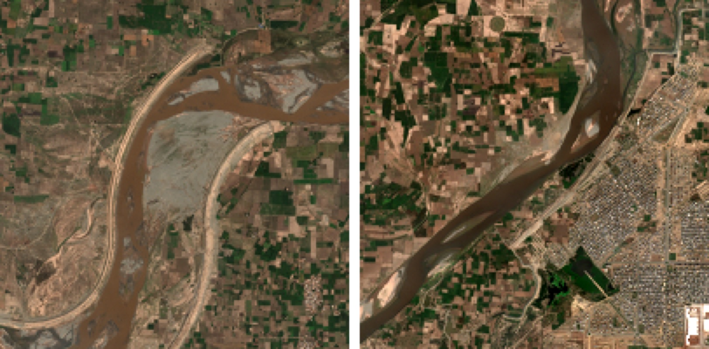
The Ravi on 18 Oct 2026, in two pieces of the same satellite image. Left: above the city, 8 km below the Ravi Siphon. Right: below the city, 48 km below the siphon and 13 km past the motorway bridge. Each square is 4 km across and the colours are scaled the same way. The water on the right reflected 41% less red light. Contains modified Copernicus Sentinel data, 2026.
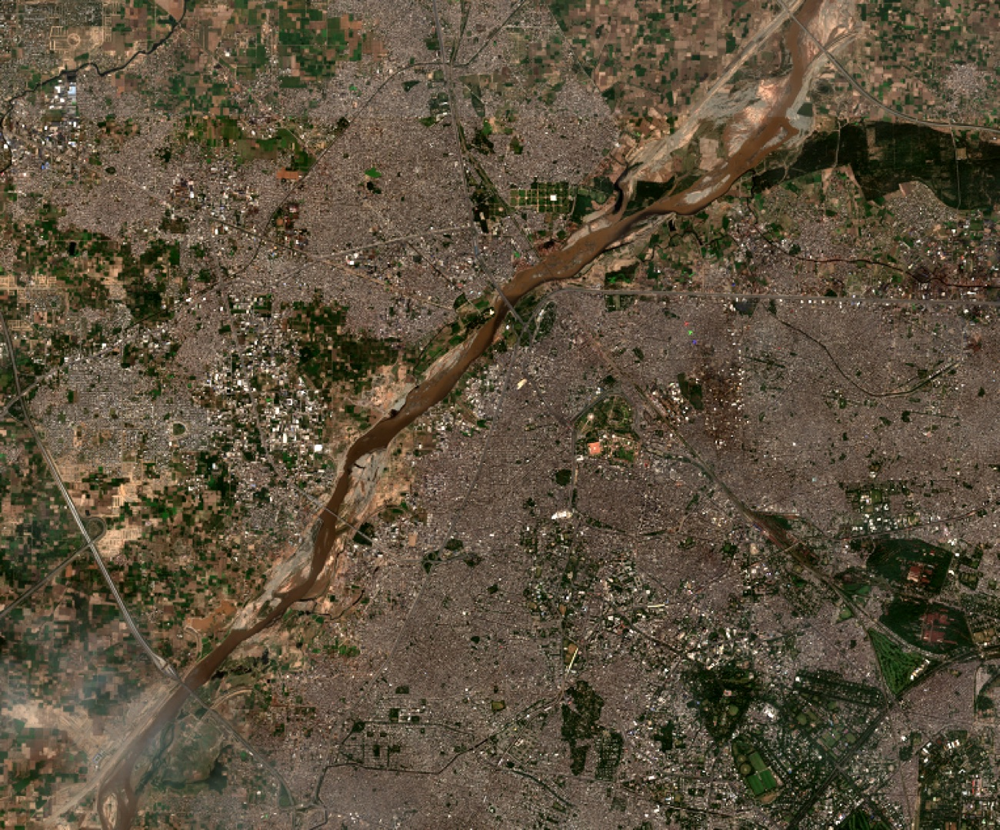
The same day, wider: the Ravi flowing from top right to bottom left past north-west Lahore. The image is about 15 km across. A thin cloud covers the bottom left corner. Contains modified Copernicus Sentinel data, 2026.
Above Lahore the Ravi carries silt, fine soil held in the water, which makes it pale and bright. Below the city it is a darker brown. The two close-ups show the difference on one day, and the wider image shows where it happens: the river comes in from the top right pale and leaves at the bottom left dark. People who sampled the river from its banks have described the same thing. A 2011 study by an officer of the provincial irrigation department recorded the water as "yellowish" and "odorless" at the Ravi Siphon, above the city, and as "blackish" with an objectionable smell at Shahdara Bridge and at two places further down.
One image is one day. To see whether it holds, we went through every date on which the satellite catalogue lists an image of this stretch in two seasons, March to April and October, from 2018 to 2026. There were 279 such candidate dates, usually 2 or 3 days apart, most of them cloudy. We kept the 57 on which the catalogue recorded less than 3% cloud and the whole stretch was covered, and could measure 55 of them: 30 in October and 25 in spring. Of those, 52 had enough water above the city to set the upstream level, and they are the dates in the charts; 49 had enough water in both of the stretches we compare. "Low-cloud" means under 3% cloud over the whole image tile, so a few images have some cloud in them. No date was added or dropped by eye, and the list of every candidate date, with the reason it was kept or left out, is in the evidence files. From November to February the haze is too thick, and in the monsoon the cloud. For every 500 m of river we recorded how bright the water was in red light.
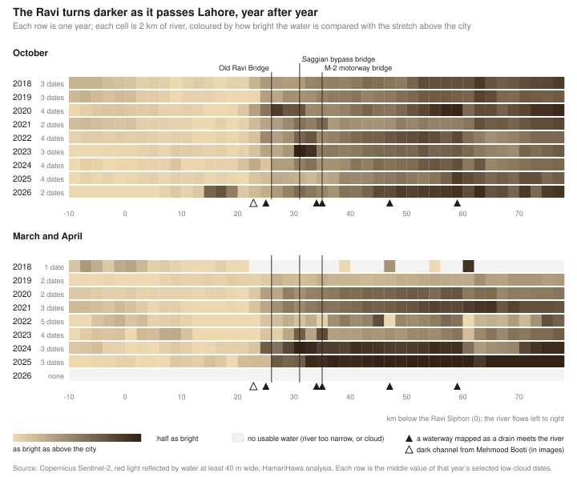
Each row in the chart is one year and each cell is 2 km of river, coloured by how bright the water was compared with the stretch above the city. Distances are counted downstream from the Ravi Siphon, where a canal passes under the river north-east of Lahore. Every October row has the same shape: pale down to the edge of the city, then darker. The spring rows show it too, with gaps where the river had shrunk to a channel too narrow to measure.
For a single figure, we compared two stretches on each date: the first 21 km below the siphon, which is above the city, and the stretch from 30 to 49 km, which runs past the south-west of the city and beyond. Both could be measured on 49 dates, 29 in October and 20 in spring, and the lower stretch was darker on 47 of them. It was 26% darker on a typical October date and 30% on a typical spring date. The two exceptions were 3 Oct 2024 and 13 Oct 2025, when the two stretches were alike, within 1%. The largest difference was 64%, on 13 Mar 2022. These figures describe the colour of the water, not what is in it.
The fall begins near the city's northern side
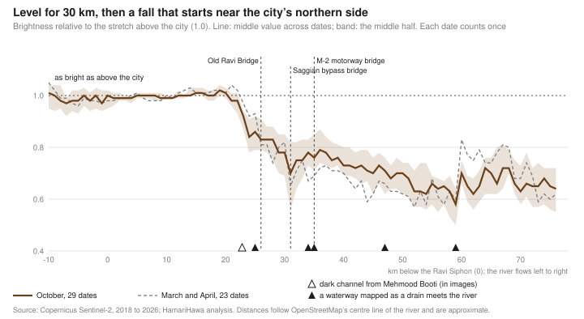
Putting the October dates together, with each date counted once, gives the line in this chart. For about 31 km above the city the brightness does not change: the middle value stays between 0.97 and 1.02 of the upstream level. We take the fall to begin at the first kilometre from which the October middle value stays at least 5% below the upstream level for 5 kilometres running. That is about 23 km below the siphon, some 3 km above the Old Ravi Bridge. By 24 km the water is typically 16% darker, by 30 km 22%, by 44 km 29% and by 54 km 38%.
What is at that point? In the satellite images a thin black channel comes in from the east, from the Mehmood Booti side, and meets the river about 23 km below the siphon, at about the same river kilometre as the October profile begins to fall. The picture below, taken on 13 Mar 2022, shows the meeting place inside the white ring. From there the black water runs along the city-side bank before it mixes into the river. We read the meeting place from images with 10 m pixels, to roughly 100 m either way.
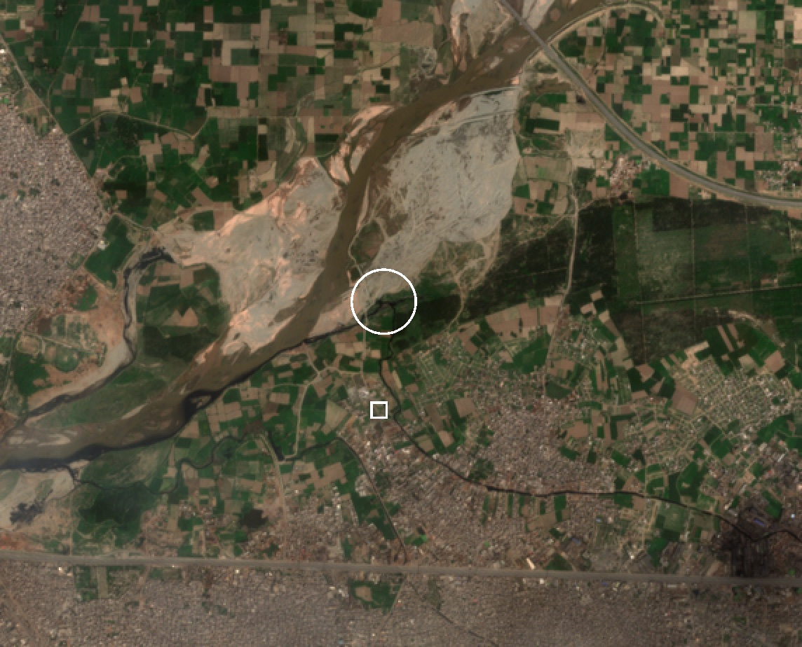
The place where the river begins to darken, 13 Mar 2022. White ring: a black channel from the Mehmood Booti side meets the river. White square: where a published study sampled the Mehmood Booti drain. This was the date with the largest difference in our record, 64%, so it is not a typical day. Copernicus Sentinel-2, true colour
OpenStreetMap draws a drain on this line but stops it about 1 km short of the river, so our map shows no drain mouth here. The first mouth on the map is at 25 km, and the others are at 34, 35, 47 and 59 km. These are the black triangles on the charts; the white triangle is the dark channel from the Mehmood Booti side. The map does not name them or say what they carry.
We take the channel to be the Mehmood Booti drain, most likely, because a published study of that drain gives a sampling position that lies on the same visible channel. A study in the Pakistan Engineering Congress Journal in 2025 sampled the Mehmood Booti drain twice a day between 1 Jun 2020 and 5 Jun 2020, at 2 places. One of them, the white square in the picture, is about 0.8 km from where the channel meets the river. The water had almost no dissolved oxygen, as little as 0.29 milligrams a litre. Its biochemical oxygen demand, a measure of organic waste, was 146 to 432 milligrams a litre, and it held 473 to 2,675 milligrams a litre of suspended solids. The authors describe the area as "densely industrialized" and the levels as far above the national standards. They did not measure metals.
So the fall in brightness begins at about the place where this channel reaches the river. That is a match in place. It does not establish that the drain causes the fall. The Mehmood Booti drain is the smallest of the eight drains in the published table below, about 1% of their published flow, and the fall keeps growing past the larger ones downstream. The images show where the change starts. They cannot show how much each drain adds.
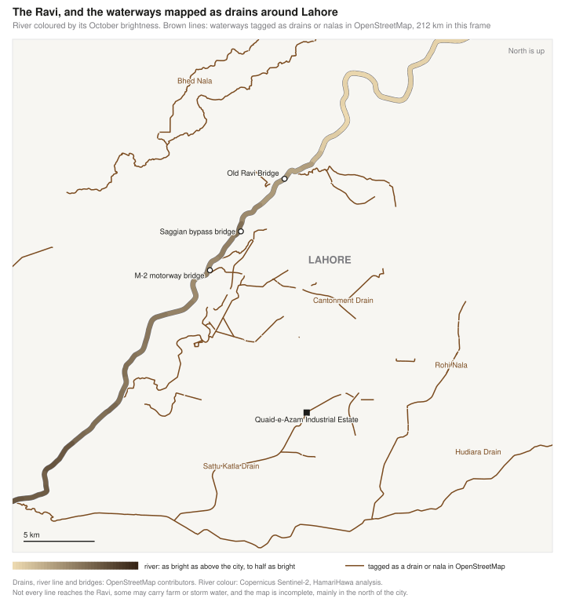
The brown lines are every waterway that OpenStreetMap tags as a drain or a nala in this area, about 212 km of them inside the frame. Not all of them reach the Ravi, some on the outskirts may carry farm or storm water, and the map is incomplete, mainly in the north of the city.
A study by the Punjab government's Irrigation Research Institute lists eight drains entering the Ravi at Lahore. We could not find surveyed positions for their outfalls, so they are listed here in order and not marked on our charts.
Drains entering the Ravi at Lahore and their discharge, as published by the Irrigation Research Institute; upstream first. The study gives no date for the discharge figures
Drain
Cusecs
Cubic metres a second
Share of the eight
Mehmood Booti
21
0.6
1%
Shad Bagh
139
3.9
8%
Farrukhabad
219
6.2
13%
Budha Ravi
42
1.2
3%
Main Outfall
193
5.5
12%
Gulshan-e-Ravi
247
7.0
15%
Babu Sabu
271
7.7
16%
Hudiara
536
15.2
32%
The eight add up to about 1,667 cusecs before rounding (the rounded rows above add to 1,668), or 47 cubic metres a second. The same study says elsewhere that the city's discharge has "crossed" 3,304 cusecs, and other sources give other totals, so we treat the size of the discharge as uncertain.
What the drains carry: sewage and factory waste
The drains do not carry sewage alone. A 2016 study of selected industries at the Quaid-e-Azam Industrial Estate reported about 475 industries there, sending an estimated 134,541 cubic metres of wastewater a day to the Ravi through the Sattu Katla and Hudiara drains, with no treatment plant at the estate at the time. In the Mehmood Booti area, where the fall in brightness begins, OpenStreetMap marks factory chimneys beside the drain and a steel works nearby.
What this does to the river has been measured by sampling above and below the city, the same comparison we make from space. A 2013 study in the journal Environmental Monitoring and Assessment took water and riverbed mud at the Ravi Siphon, above the city, and at three places at and below it. In the low-flow season the mud at Sundar, below the city, held more chromium than the mud at the siphon by 461%, more cadmium by 917%, more nickel by 853% and more lead by 179%. Its authors put this down to the city's domestic and industrial discharge. A 2024 study in Environmental Sciences Europe classed 56% of its samples from the Ravi, and 100% of its samples from the city's drains, as highly contaminated with metals.
A satellite cannot see metals. The brightness we measure can be changed by what is suspended and dissolved in the water in quantity, such as silt and organic matter; we have not measured which of these is at work. So this record follows the visible part of what the drains bring, and the sampling studies cover the part it cannot see. Judging whether the measures on industry are working will need both.
No clear trend in nine Octobers
If the gap between the river above and below Lahore were narrowing or widening, the yearly figures should drift one way. In October, as far as this record can tell, they do not.
How much darker the Ravi was below Lahore than above it in October, year by year. Each figure is the middle value of that year's dates
Year
Dates compared
Darker below the city by
2018
3
27%
2019
3
25%
2020
4
27%
2021
2
21%
2022
4
32%
2023
3
29%
2024
4
25%
2025
4
20%
2026
2
32%
The yearly figure moves between 20% and 32%. It averaged 26% over the first three years and 26% over the last three. A straight line through the nine figures rises by 0.2 of a percentage point a year, but with nine points the 95% confidence interval is wide: from a fall of 1.2 points a year to a rise of 1.6. So we can say there is no clear trend, not that nothing changed. And because this is colour, a steady gap does not show that the load of pollution stayed the same.
This applies to October only. The spring record is thinner and far less steady: 7 of the 9 years have a spring figure, and they range from 9% to 52%, so we do not read a trend from it. Part of the movement from date to date is the river itself. On the third of October dates when the water below the city was widest, 165 m or more, it was typically 19% darker than upstream; on the third when it was narrowest, 120 m or less, 28%. Dates with a wider channel had a smaller contrast in colour. That is consistent with dilution, but the width we measure is only a rough guide to flow and does not establish the cause.
What we will watch for
The measure we will follow is the October gap: how much less red light the river reflects below the city than above it. Its baseline is 26%, and over 9 years the yearly figure has stayed between 20% and 32%. The first phase of the plant would treat about 14% to 16% of the wastewater the river is reported to receive, depending on which total is used, so any early change is likely to be small, and one year will not settle it.
We set one rule in advance. If the yearly October figure falls outside the range of these nine years, below 20% or above 32%, for 2 years running, we will report it. That is a trigger for reporting, not by itself evidence of improvement or of the opposite: a yearly figure rests on two to four dates and can move by chance, and the river's flow has to be taken into account. Water samples would be needed before saying what had changed. If the plant changes what reaches the river, the fall in the profile chart may also become shallower, first near the outfalls it serves; Dawn reports that the first phase will take sewage from the Cantonment Drain, Multan Road and Gulshan-e-Ravi pumping stations. The satellite's images are free, and we will add each new date that meets the same rule to this record as it comes.
Two things would make the check stronger. One is the place where the fall begins. The Mehmood Booti drain is not among the pumping stations named for the first phase of the Babu Sabu plant. A separate treatment plant for it, at Shadbagh, was put through an environmental assessment in September 2021; we did not establish what has become of it. If the river stops darkening at 23 km, that would be a reason to look at this drain. The other is the government's own stations near the siphon and at the Hudiara drain, which measure the water directly every hour. If their data is published we will set it beside this record.
What the satellite cannot tell
It sees colour, not pollution. Darker water is what dark sewage mixing into a silty river would look like, and the bank-side study saw the same change by eye. But brightness is not a count of bacteria, metals or oxygen. For those, water has to be sampled.
Other things can darken water. These are possibilities we have not measured. Silt may settle where a river slows. Deeper water over a dark bed looks darker, and through the city the river runs between embankments. Any clearer water joining the river would dilute the silt. Settling would be expected to be gradual, though, and what we see is 31 km with no change and then a fall that begins at about the place where a dark channel enters the river.
It cannot tell sewage from factory waste, or weigh one drain against another. The fall begins at about the place where the channel we take to be the Mehmood Booti drain reaches the river, and continues past the others. How much each drain adds, and how much of that is industrial, can only be settled by sampling at the outfalls.
It covers selected low-cloud dates in two seasons. There are no measurements from the monsoon, when the river is in flood, or from winter, when haze hides it. Of the 57 dates we chose, 2 could not be measured because one of the two image tiles was not in the archive we read from, and on 6 more one of the two stretches had too little wide water to compare.
Distances are approximate. They follow the river's centre line as drawn in OpenStreetMap, which is longer than today's channel in places.
We ran four checks on the measurement itself. First, the join between image tiles. The river crosses from one satellite image tile to the next 24 km below the siphon, almost exactly where the fall begins, and a mismatch between tiles could fake a step. The tiles overlap by about 10 km, so we measured 4 dates again using the other tile across that stretch. The fall was 22% one way and 21% the other on the first date, 29% and 29% on the second, 39% and 38% on the third, and 28% and 22% on the fourth. The step is there using either tile on the four dates checked, which makes a mismatch between tiles an unlikely cause.
Second, side channels. The standard measurement takes water within 700 m of the river's mapped centre line, which can let in a side channel, a pond or a drain; the dark side channel near the start of the fall is about 629 m away. Measured again with only water within 300 m of the centre line, the river was darker below the city on 46 of 49 dates, by 25% on a typical October date and 30% in spring, and the fall began 23 km below the siphon. Third, the banks. The width test looks along the east-west and north-south directions only, so some bank pixels can get through where the river runs diagonally. Using only pixels with water for 20 m in every direction gave 44 of 47 dates, 26% in October and 36% in spring, with the fall beginning at 23 km. Fourth, the choice of image. On 15 dates the archive holds two versions of the same image, and our first run took whichever came first. We fixed a rule for which to use and measured every date again; those are the figures in this report. One date changed: 13 Oct 2025, which the first run could not compare because it had read a clipped image, and which turned out to be one of the two dates with no difference. No other date's rounded figure changed; the largest change was 0.04 of a percentage point.
Method and sources
Sentinel-2 Level-2A surface reflectance, tiles 43RDQ and 43SDR, read from Microsoft's Planetary Computer. Dates were chosen by a fixed rule from the Earth Search scene catalogue: both tiles present with less than 3% cloud and less than 5% of the tile missing, 1 March to 20 April and 1 to 25 October. A pixel counts as water if it is brighter in green light than in shortwave infrared, dark in near infrared, not flagged as cloud or cloud shadow, and within 700 m of the river's centre line. Each water pixel is given the river kilometre of the nearest point on the centre line, and only pixels where the water is at least 40 m wide, both east to west and north to south, are kept, to cut down the bank pixels that get mixed in. The figure for each 500 m of river is the middle value of the red band for those pixels. "Darker by 26%" means the middle value for the lower stretch was 26% below that for the upper stretch on the same date. In the charts each date counts once.
European Space Agency, Copernicus Sentinel-2 Level-2A, 2018 to 2026, via Microsoft Planetary Computer. planetarycomputer.microsoft.com
OpenStreetMap contributors. River centre line, waterways tagged as drains or nalas, and bridges, downloaded 21 November 2026. www.openstreetmap.org
Afaf Ayesha, Irrigation and Power Department, Lahore. “Water quality assessment of river Ravi around Lahore city.” Pakistan Engineering Congress, paper 704, 2011. pecongress.org.pk
Ghulam Zakir Hassan, Faiz Raza Hassan and Saleem Akhtar, Irrigation Research Institute, Government of the Punjab. “Environment threats to groundwater in Lahore area.” Pakistan Engineering Congress. pecongress.org.pk
Sajjad Haydar and others. “Wastewater characterization of selected industries in Quaid-e-Azam Industrial Estate: treatment options and impact on groundwater quality.” Proceedings of the Pakistan Academy of Sciences B 53(2), 2016. www.paspk.org
Habib Ur Rehman, Faakhar Raza and Shazia Ghaffar. “Physico-chemical and microbiological water quality assessment of Mehmood Booti drain in Lahore city.” Pakistan Engineering Congress Journal, January to June 2025. journal.pecongress.org.pk
Hafiz Abdullah Shakir, Javed Iqbal Qazi and Abdul Shakoor Chaudhry. “Monitoring the impact of urban effluents on mineral contents of water and sediments of four sites of the river Ravi, Lahore.” Environmental Monitoring and Assessment 185, 2013. link.springer.com. We read the abstract.
Hafiza Hira Iqbal and others. “Human health and ecology at risk: a case study of metal pollution in Lahore, Pakistan.” Environmental Sciences Europe 36, 2024. link.springer.com
Munawar Ahmad and others, International Waterlogging and Salinity Research Institute. “Impact assessment of domestic and industrial effluent on ground water quality surrounding Lahore.” Pakistan Engineering Congress, World Water Day 2021, paper 174. pecongress.org.pk
“217 factories polluting Ravi, LHC told.” The Nation, 19 May 2012. nation.com.pk
“Punjab envisages Water Quality Index.” The Express Tribune, 24 October 2026. tribune.com.pk
“Water pollution monitoring lacks public transparency.” The Express Tribune, 11 October 2026. tribune.com.pk
“River pollution: Lahore High Court asks for detail of industries polluting the Ravi.” The Express Tribune, 18 May 2012. tribune.com.pk
Ravi Urban Development Authority. Wastewater treatment plant at Mahmood Booti/Shadbagh, Lahore: environmental impact assessment study, September 2021. epd.punjab.gov.pk
“Asian Infrastructure Investment Bank okays $235m for Lahore water project.” Dawn, 12 October 2025. www.dawn.com. The bank's own page gives $160 million, which we use.
“Rs50bn project to treat wastewater before disposal into Ravi.” Dawn, 16 August 2025. www.dawn.com
“Govt mulls sewage treatment plants on Hudiara Drain.” Dawn, 25 February 2026. www.dawn.com
Asian Infrastructure Investment Bank. Pakistan: Lahore Wastewater and Drainage Management Project, approved 9 October 2025. www.aiib.org
Lahore Water and Sanitation Agency. Updated environmental and social impact assessment for the sewerage system from Larech Colony to Gulshan-e-Ravi, published by the Asian Infrastructure Investment Bank, 2025. www.aiib.org
The input files behind every chart and table, and the scripts that make them, are in the site's repository under scripts/reports/ravi-drains/analysis/.
لاہور کے نالے شہر کا سیوریج اور کارخانوں کا گندا پانی راوی میں لے جاتے ہیں، اور اس کا بڑا حصہ صاف کیے بغیر۔ حکومت نے دونوں پر کام شروع کیا ہے۔ بابو صابو پر سیوریج صاف کرنے کے پہلے بڑے پلانٹ کو اگست 2026 میں 56 ارب روپے کی لاگت سے وفاقی منظوری ملی، اور صوبائی محکمۂ ماحولیات کے مطابق پانی کی خودکار نگرانی کے اسٹیشن لگائے گئے ہیں، جن میں سے دو لاہور میں راوی پر ہیں، اور کارخانوں کے اخراج کی جانچ کے لیے دستے بنائے گئے ہیں۔ یہ رپورٹ 18 اکتوبر 2026 تک دریا کے رنگ کا ریکارڈ ہے، یعنی بابو صابو پلانٹ کی تعمیر سے پہلے اور نگرانی کے نئے پروگرام کے نتائج شائع ہونے سے پہلے کا، تاکہ بعد میں ان اقدامات کا اثر پرکھا جا سکے۔ ہم نے 2018 سے 2026 کے درمیان کم بادل والی 55 منتخب تاریخوں کی سیٹلائٹ تصویروں سے پانی کا رنگ ناپا۔ جن 49 تاریخوں کا موازنہ ممکن تھا ان میں سے 47 پر دریا کا رنگ شہر سے نیچے، شہر سے اوپر کے مقابلے میں گہرا تھا؛ اکتوبر کی ایک عام تاریخ پر 26% زیادہ گہرا۔ یہ تبدیلی تقریباً اسی جگہ سے شروع ہوتی ہے جہاں محمود بوٹی کی طرف سے آنے والا ایک سیاہ نالہ، جو غالباً محمود بوٹی ڈرین ہے، دریا میں گرتا ہے؛ یہ جگہ کی مطابقت ہے، سبب کا ثبوت نہیں۔ نو برسوں کے اکتوبر میں اس فرق میں کوئی واضح رجحان نظر نہیں آتا۔ رنگ آلودگی کا براہِ راست پیمانہ نہیں، اور تصویریں سیوریج اور کارخانوں کے فضلے میں فرق نہیں کر سکتیں؛ اس کے لیے ہم ان مطالعات کا حوالہ دیتے ہیں جن میں پانی کے نمونے لیے گئے۔ جیسے جیسے ان اقدامات پر عمل ہوتا جائے گا، ہم یہ پیمائش دہراتے رہیں گے۔
47 / 49کم بادل والی منتخب تاریخوں میں سے اتنی پر راوی کا رنگ لاہور سے نیچے، اوپر کے مقابلے میں گہرا تھا، 2018 سے 2026 تک
26%بنیادی عدد: اکتوبر کی ایک عام تاریخ پر شہر سے نیچے کا پانی اتنی کم سرخ روشنی لوٹاتا تھا
20% – 32%9 برسوں میں اکتوبر کے سالانہ عدد کی حد، جس میں کوئی واضح رجحان نہیں
540 – 640ملین گیلن گندا پانی، جو شائع شدہ دو تخمینوں کے مطابق لاہور سے روزانہ صاف کیے بغیر دریا میں جاتا ہے
اس رپورٹ کو خود جانچیں۔ یہاں کا ہر عدد data.json میں اپنے ماخذ اور طریقے کے ساتھ موجود ہے، اور خام فائلیں اور اسکرپٹ بھی ساتھ رکھے گئے ہیں۔ دریا کی پیمائشیں ہماری اپنی ہیں، جو یورپ کے کوپرنیکس پروگرام کے سیٹلائٹ Sentinel-2 کی تصویروں سے کی گئیں۔ یہ پانی کا رنگ ناپتی ہیں، یعنی یہ کہ پانی کتنی سرخ روشنی لوٹاتا ہے۔ یہ سیوریج، جراثیم، دھاتیں یا آکسیجن نہیں ناپتیں۔ نالوں میں بہنے والے پانی، صنعت اور صفائی کے پلانٹوں کے بارے میں اعداد شائع شدہ مطالعات اور خبروں سے لیے گئے ہیں؛ ہم انہیں نقل کر رہے ہیں؛ ہم نے خود ان کی تصدیق نہیں کی۔
کس چیز کو پرکھا جا رہا ہے
ڈان نے اکتوبر 2025 میں لکھا کہ لاہور میں گندے پانی کی صفائی کی ”فی الحال کوئی سہولت نہیں“ اور راوی میں روزانہ تقریباً 640 ملین گیلن گندا پانی صاف کیے بغیر جاتا ہے۔ واسا نے سیوریج کے ایک منصوبے کے لیے جو ماحولیاتی جائزہ تیار کیا اور جسے ایشین انفراسٹرکچر انویسٹمنٹ بینک نے شائع کیا، اس کے مطابق صاف کیے بغیر دریا میں جانے والا گھریلو سیوریج 540 ملین گیلن روزانہ ہے۔ یہ تقریباً 2,450 سے 2,910 ملین لیٹر بنتا ہے۔ ہم نے اسے خود نہیں ناپا اور دونوں عدد دے رہے ہیں۔ چھوٹے پلانٹ موجود ہیں: فروری 2026 کی ایک خبر کے مطابق ہڈیارہ ڈرین کے ساتھ رجسٹرڈ 49 ہاؤسنگ سوسائٹیوں میں سے 32 میں ابتدائی صفائی کے پلانٹ چل رہے تھے، اور ایک صنعتی کلسٹر کے 18 کارخانوں میں بھی۔ پورے شہر کے لیے کوئی پلانٹ نہیں۔
اب یہ صورت بدلنے والی ہے۔ اگست 2025 میں صوبائی ڈویلپمنٹ ورکنگ پارٹی نے بابو صابو پر ایک ٹریٹمنٹ پلانٹ کی منظوری دی، جسے شہر کا پہلا بڑا پلانٹ بتایا گیا؛ اس وقت لاگت 50.2 ارب روپے تھی۔ 21 اگست 2026 کو وفاقی سطح پر قومی اقتصادی کونسل کی ایگزیکٹو کمیٹی (ایکنک) نے اسے 56 ارب روپے میں منظور کیا، جس کا تقریباً 74% فرانسیسی ترقیاتی ادارہ دے گا۔ ڈان کے مطابق اس سے ٹینڈر مکمل ہونے کے بعد 6 ماہ کے اندر کام شروع ہونے کی راہ ہموار ہو گئی۔ پلانٹ پہلے مرحلے میں روزانہ 88 ملین گیلن اور بالآخر 198 ملین گیلن پانی صاف کرے گا؛ تیاری پر 12 ماہ اور تعمیر پر 42 ماہ لگیں گے۔ کل 6 پلانٹ بنانے کا منصوبہ ہے۔ اس کے علاوہ اکتوبر 2025 میں ایشین انفراسٹرکچر انویسٹمنٹ بینک نے سیوریج کی تین بڑی لائنوں کے لیے 160 ملین ڈالر منظور کیے؛ یہ لائنیں مل کر تقریباً 32.3 کلومیٹر لمبی ہوں گی اور ان کا مقصد لگ بھگ 9 کلومیٹر کھلے نالوں سے سیوریج نکالنا ہے۔ بینک بابو صابو پلانٹ کو اسی سے جڑا ہوا منصوبہ بتاتا ہے جس کا خرچ فرانسیسی ادارہ اٹھائے گا۔ ہمیں ایسی کوئی خبر نہیں ملی کہ پلانٹ کی تعمیر شروع ہو چکی ہے، اور ہم اس کی تصدیق یا تردید نہیں کر سکے۔
نالوں میں صرف سیوریج نہیں بہتا۔ دوسرا حصہ صنعت کا گندا پانی ہے۔ مئی 2012 کی ایک خبر کے مطابق صوبائی محکمۂ ماحولیات نے لاہور ہائی کورٹ کو بتایا کہ اس نے پچھلے ہفتے میں 217 ایسے کارخانوں کی نشان دہی کی ہے جو اپنا فضلہ راوی میں ڈال رہے تھے، اور انہیں نوٹس بھیج دیے ہیں۔ یہ حتمی گنتی نہیں تھی: محکمے کا سروے ابھی جاری تھا، اور عدالت نے دیکھا کہ محکمے اور واسا کی فہرستیں آپس میں نہیں ملتیں، اور نظرثانی شدہ فہرستیں پیش کرنے کا حکم دیا۔ پانی پر تحقیق کے ایک وفاقی ادارے کے 2021 کے مقالے میں شہر کے گرد 1,213 صنعتی یونٹ گنے گئے ہیں، جو 2 بڑے اور 11 چھوٹے کلسٹروں میں ہیں۔
یہاں بھی حکومت نئے اقدامات بتاتی ہے۔ ایکسپریس ٹریبیون کی 24 اکتوبر 2026 کی خبر کے مطابق صوبائی محکمۂ ماحولیات نے پنجاب بھر میں دریاؤں، نہروں اور پانی کے دوسرے ذخیروں پر 15 خودکار اسٹیشن لگائے ہیں، اور ہر اسٹیشن ہر گھنٹے پانی کی 14 خصوصیات ناپتا ہے۔ خبر میں جن جگہوں کے نام ہیں ان میں سے 2 لاہور میں راوی پر ہیں: ایک راوی سائفن کے قریب، شہر سے اوپر، اور دوسری وہاں جہاں ہڈیارہ ڈرین دریا میں گرتی ہے، شہر سے نیچے۔ محکمے نے صنعتی اخراج کی جانچ کے لیے ”خصوصی واٹر اسکواڈ“ بھیجے ہیں، اور ہڈیارہ ڈرین کے 56 مقامات سے نمونے لے رہا ہے تاکہ معلوم ہو سکے کہ اس کی آلودگی میں مقامی صنعت کا حصہ کتنا ہے، شہر کا کتنا اور سرحد پار سے آنے والے پانی کا کتنا۔ اسی خبر کے مطابق لاہور میں تقریباً 10 جگہوں سے صاف نہ کیا گیا سیوریج اور آلودہ پانی دریا میں داخل ہوتا ہے، اور کم از کم 8 ٹریٹمنٹ پلانٹ لگائے جائیں گے، جبکہ ڈان کی پہلی خبر میں یہ تعداد 6 تھی۔ ہم نے ان اسٹیشنوں کا ڈیٹا نہیں دیکھا؛ اسی اخبار نے 11 اکتوبر 2026 کو لکھا کہ یہ ڈیٹا عوام کے لیے دستیاب نہیں۔ یہ ریکارڈ ان سب اقدامات کو پرکھنے کے لیے ہے، سیوریج پر بھی اور صنعت پر بھی۔
بنیادی ریکارڈ: تصویریں کیا دکھاتی ہیں
18 اکتوبر 2026 کو راوی، ایک ہی سیٹلائٹ تصویر کے دو ٹکڑوں میں۔ بائیں: شہر سے اوپر، راوی سائفن سے 8 کلومیٹر نیچے۔ دائیں: شہر سے نیچے، سائفن سے 48 کلومیٹر نیچے اور موٹروے کے پل سے 13 کلومیٹر آگے۔ ہر مربع 4 کلومیٹر چوڑا ہے اور دونوں میں رنگوں کا پیمانہ ایک ہے۔ دائیں طرف کے پانی نے 41% کم سرخ روشنی لوٹائی۔ اس میں کوپرنیکس Sentinel کا ترمیم شدہ ڈیٹا شامل ہے، 2026۔وہی دن، ذرا دور سے: راوی اوپر دائیں سے نیچے بائیں کی طرف لاہور کے شمال مغرب سے گزرتا ہوا۔ تصویر تقریباً 15 کلومیٹر چوڑی ہے۔ نیچے بائیں کونے پر ہلکا سا بادل ہے۔ اس میں کوپرنیکس Sentinel کا ترمیم شدہ ڈیٹا شامل ہے، 2026۔
لاہور سے اوپر راوی میں گاد ہوتی ہے، یعنی پانی میں معلق باریک مٹی، جس سے پانی ہلکا اور چمک دار دکھتا ہے۔ شہر سے نیچے اس کا رنگ گہرا مٹیالا ہو جاتا ہے۔ دونوں قریبی تصویریں ایک دن کا یہ فرق دکھاتی ہیں، اور بڑی تصویر بتاتی ہے کہ یہ کہاں ہوتا ہے: دریا اوپر دائیں سے ہلکے رنگ میں آتا ہے اور نیچے بائیں سے گہرے رنگ میں نکلتا ہے۔ جن لوگوں نے کنارے سے دریا کے نمونے لیے، انہوں نے بھی یہی لکھا ہے۔ صوبائی محکمۂ آبپاشی کی ایک افسر کے 2011 کے مطالعے میں راوی سائفن پر، شہر سے اوپر، پانی کو ”زردی مائل“ اور ”بے بو“ درج کیا گیا، اور شاہدرہ پل اور اس سے نیچے دو جگہوں پر ”سیاہی مائل“ اور ناگوار بو والا۔
ایک تصویر ایک ہی دن کی ہوتی ہے۔ یہ دیکھنے کے لیے کہ بات ہر بار یہی ہے یا نہیں، ہم نے 2018 سے 2026 تک دو موسموں، مارچ تا اپریل اور اکتوبر، کی ہر وہ تاریخ دیکھی جس پر سیٹلائٹ کے کیٹلاگ میں دریا کے اس حصے کی تصویر درج ہے۔ ایسی 279 ممکنہ تاریخیں تھیں، عموماً 2 یا 3 دن کے وقفے سے، اور ان میں سے زیادہ تر پر بادل تھے۔ ہم نے وہ 57 تاریخیں رکھیں جن پر کیٹلاگ میں 3% سے کم بادل درج تھا اور دریا کا پورا حصہ تصویر میں آتا تھا، اور ان میں سے 55 کی پیمائش ہو سکی: اکتوبر کی 30 اور بہار کی 25۔ ان میں سے 52 پر شہر سے اوپر اتنا پانی تھا کہ اوپر کی سطح طے ہو سکے، اور چارٹوں میں یہی تاریخیں ہیں؛ 49 پر ان دونوں حصوں میں کافی پانی تھا جن کا ہم موازنہ کرتے ہیں۔ ”کم بادل“ کا مطلب ہے پوری ٹائل پر 3% سے کم بادل، اس لیے چند تصویروں میں تھوڑا بہت بادل موجود ہے۔ کوئی تاریخ تصویر آنکھ سے دیکھ کر نہ شامل کی گئی نہ نکالی گئی، اور ہر ممکنہ تاریخ کی فہرست، اسے رکھنے یا چھوڑنے کی وجہ سمیت، شواہد کی فائلوں میں ہے۔ نومبر سے فروری تک دھند بہت گہری ہوتی ہے، اور مون سون میں بادل۔ دریا کے ہر 500 میٹر کے لیے ہم نے درج کیا کہ پانی سرخ روشنی میں کتنا چمک دار تھا۔
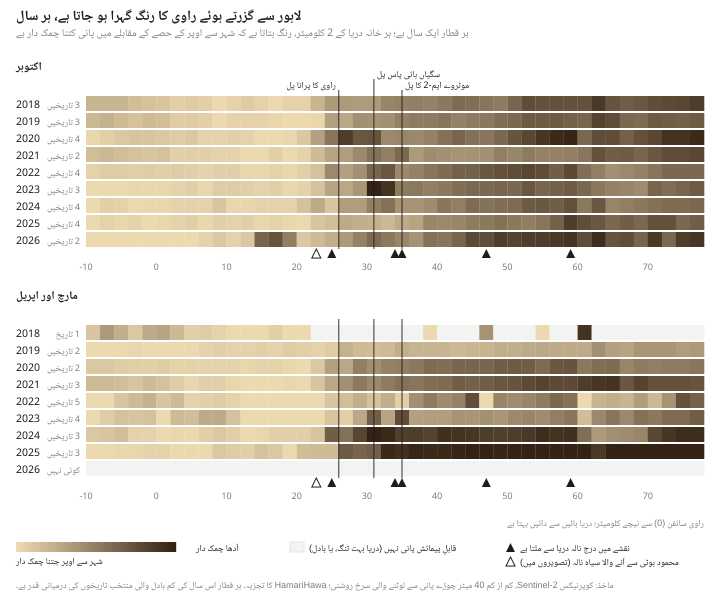
چارٹ کی ہر قطار ایک سال ہے اور ہر خانہ دریا کے 2 کلومیٹر، اور رنگ بتاتا ہے کہ شہر سے اوپر کے حصے کے مقابلے میں پانی کتنا چمک دار تھا۔ فاصلے راوی سائفن سے بہاؤ کی سمت میں گنے گئے ہیں، جہاں لاہور کے شمال مشرق میں ایک نہر دریا کے نیچے سے گزرتی ہے۔ اکتوبر کی ہر قطار کی شکل ایک جیسی ہے: شہر کے کنارے تک ہلکی، پھر گہری۔ بہار کی قطاروں میں بھی یہی نظر آتا ہے، البتہ جہاں دریا سکڑ کر اتنا تنگ رہ گیا تھا کہ ناپا نہ جا سکے وہاں خانے خالی ہیں۔
ایک ہی عدد نکالنے کے لیے ہم نے ہر تاریخ پر دو حصوں کا موازنہ کیا: سائفن سے نیچے کے پہلے 21 کلومیٹر، جو شہر سے اوپر ہیں، اور 30 سے 49 کلومیٹر تک کا حصہ، جو شہر کے جنوب مغرب سے گزر کر آگے جاتا ہے۔ دونوں کی پیمائش 49 تاریخوں پر ہو سکی، اکتوبر کی 29 اور بہار کی 20 پر، اور ان میں سے 47 پر نیچے کے حصے کا رنگ زیادہ گہرا تھا۔ اکتوبر کی ایک عام تاریخ پر یہ 26% زیادہ گہرا تھا اور بہار کی ایک عام تاریخ پر 30%۔ صرف دو تاریخیں اس سے الگ رہیں، 3 اکتوبر 2024 اور 13 اکتوبر 2025، جب دونوں حصے تقریباً ایک جیسے تھے، 1% کے اندر۔ سب سے بڑا فرق 64% تھا، 13 مارچ 2022 کو۔ یہ اعداد پانی کے رنگ کے بارے میں ہیں، اس کے بارے میں نہیں کہ پانی میں کیا ہے۔
کمی شہر کے شمالی سرے کے قریب سے شروع ہوتی ہے
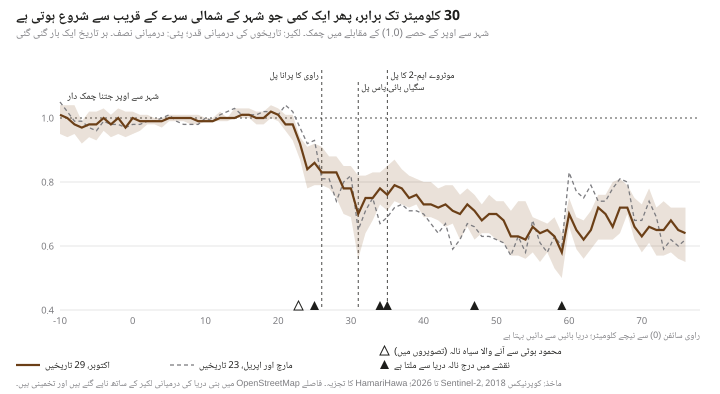
اکتوبر کی سب تاریخوں کو ملا کر، ہر تاریخ کو ایک بار گن کر، اس چارٹ کی لکیر بنتی ہے۔ شہر سے اوپر تقریباً 31 کلومیٹر تک چمک نہیں بدلتی: درمیانی قدر اوپر کی سطح کے 0.97 اور 1.02 کے درمیان رہتی ہے۔ ہم کمی کا آغاز اس پہلے کلومیٹر سے مانتے ہیں جس کے بعد اکتوبر کی درمیانی قدر لگاتار 5 کلومیٹر تک اوپر کی سطح سے کم از کم 5% نیچے رہے۔ یہ جگہ سائفن سے تقریباً 23 کلومیٹر نیچے ہے، راوی کے پرانے پل سے کوئی 3 کلومیٹر اوپر۔ 24 کلومیٹر تک پانی عموماً 16% زیادہ گہرا ہو چکا ہوتا ہے، 30 کلومیٹر تک 22%، 44 کلومیٹر تک 29% اور 54 کلومیٹر تک 38%۔
اس جگہ کیا ہے؟ سیٹلائٹ تصویروں میں ایک پتلا سیاہ نالہ مشرق سے، محمود بوٹی کی طرف سے، آتا ہے اور سائفن سے تقریباً 23 کلومیٹر نیچے دریا سے ملتا ہے، یعنی لگ بھگ اسی کلومیٹر پر جہاں سے اکتوبر کی لکیر گرنا شروع ہوتی ہے۔ نیچے کی تصویر، جو 13 مارچ 2022 کو لی گئی، سفید دائرے کے اندر یہ ملاپ دکھاتی ہے۔ وہاں سے سیاہ پانی کچھ دور تک شہر والے کنارے کے ساتھ ساتھ چلتا ہے اور پھر دریا میں گھل جاتا ہے۔ ملاپ کی جگہ ہم نے 10 میٹر پکسل والی تصویروں سے پڑھی ہے، جس میں لگ بھگ 100 میٹر اِدھر اُدھر کا فرق ہو سکتا ہے۔
وہ جگہ جہاں سے دریا کا رنگ گہرا ہونا شروع ہوتا ہے، 13 مارچ 2022۔ سفید دائرہ: محمود بوٹی کی طرف سے آنے والا سیاہ نالہ دریا سے ملتا ہے۔ سفید مربع: وہ جگہ جہاں ایک شائع شدہ مطالعے نے محمود بوٹی ڈرین کے نمونے لیے۔ ہمارے ریکارڈ میں سب سے بڑا فرق، 64%، اسی تاریخ کا ہے، اس لیے یہ کوئی عام دن نہیں۔ کوپرنیکس Sentinel-2، اصل رنگ
OpenStreetMap اس لکیر پر ایک نالہ دکھاتا ہے مگر اسے دریا سے تقریباً 1 کلومیٹر پہلے ختم کر دیتا ہے، اس لیے ہمارے نقشے میں یہاں کسی نالے کا دہانہ نہیں۔ نقشے پر پہلا دہانہ 25 کلومیٹر پر ہے، اور باقی 34، 35، 47 اور 59 کلومیٹر پر۔ چارٹوں پر یہ سیاہ تکونیں ہیں؛ سفید تکون محمود بوٹی کی طرف سے آنے والا سیاہ نالہ ہے۔ نقشہ نہ ان کے نام بتاتا ہے نہ یہ کہ ان میں کیا بہتا ہے۔
ہم اس نالے کو غالباً محمود بوٹی ڈرین سمجھتے ہیں، کیونکہ اس ڈرین پر شائع ہونے والے ایک مطالعے میں نمونے لینے کی جو جگہ دی گئی ہے وہ تصویر میں نظر آنے والے اسی نالے پر پڑتی ہے۔ پاکستان انجینئرنگ کانگریس کے جریدے میں 2025 میں شائع ہونے والے اس مطالعے میں 1 جون 2020 سے 5 جون 2020 تک محمود بوٹی ڈرین کے 2 مقامات سے دن میں دو بار نمونے لیے گئے۔ ان میں سے ایک مقام، جو تصویر میں سفید مربع ہے، اس جگہ سے تقریباً 0.8 کلومیٹر دور ہے جہاں نالہ دریا سے ملتا ہے۔ پانی میں حل شدہ آکسیجن تقریباً نہ ہونے کے برابر تھی، کم سے کم 0.29 ملی گرام فی لیٹر۔ بائیو کیمیکل آکسیجن ڈیمانڈ، جو نامیاتی فضلے کا پیمانہ ہے، 146 سے 432 ملی گرام فی لیٹر تھی، اور معلق ٹھوس ذرات 473 سے 2,675 ملی گرام فی لیٹر۔ مصنفین علاقے کو ”گنجان صنعتی“ بتاتے ہیں اور ان مقداروں کو قومی معیار سے کہیں زیادہ۔ انہوں نے دھاتیں نہیں ناپیں۔
یوں چمک میں کمی تقریباً اسی جگہ سے شروع ہوتی ہے جہاں یہ نالہ دریا تک پہنچتا ہے۔ یہ جگہ کی مطابقت ہے۔ اس سے یہ ثابت نہیں ہوتا کہ کمی کا سبب یہی ڈرین ہے۔ نیچے دیے گئے شائع شدہ جدول کے آٹھ نالوں میں محمود بوٹی ڈرین سب سے چھوٹی ہے، ان کے شائع شدہ بہاؤ کا تقریباً 1%، اور کمی آگے کے بڑے نالوں سے گزرتے ہوئے بڑھتی جاتی ہے۔ تصویریں بتاتی ہیں کہ تبدیلی کہاں سے شروع ہوتی ہے۔ وہ یہ نہیں بتا سکتیں کہ ہر نالہ کتنا حصہ ڈالتا ہے۔
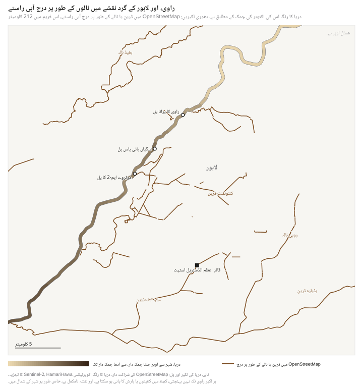
بھوری لکیریں وہ تمام آبی راستے ہیں جنہیں OpenStreetMap اس علاقے میں ڈرین یا نالہ درج کرتا ہے؛ فریم کے اندر ان کی لمبائی تقریباً 212 کلومیٹر ہے۔ یہ سب راوی تک نہیں پہنچتے، شہر کے باہر والے کچھ میں کھیتوں یا بارش کا پانی ہو سکتا ہے، اور نقشہ نامکمل ہے، خاص طور پر شہر کے شمال میں۔
حکومتِ پنجاب کے اریگیشن ریسرچ انسٹی ٹیوٹ کے ایک مطالعے میں لاہور میں راوی میں گرنے والے آٹھ نالے درج ہیں۔ ہمیں ان کے دہانوں کی ناپی ہوئی جگہیں نہیں ملیں، اس لیے یہ یہاں ترتیب سے درج ہیں اور ہمارے چارٹوں پر نہیں دکھائے گئے۔
لاہور میں راوی میں گرنے والے نالے اور ان کا بہاؤ، اریگیشن ریسرچ انسٹی ٹیوٹ کے شائع کردہ اعداد کے مطابق؛ اوپر والا پہلے۔ مطالعے میں بہاؤ کے اعداد کی کوئی تاریخ نہیں دی گئی
نالہ
کیوسک
مکعب میٹر فی سیکنڈ
آٹھوں میں حصہ
محمود بوٹی
21
0.6
1%
شاد باغ
139
3.9
8%
فرخ آباد
219
6.2
13%
بڈھا راوی
42
1.2
3%
مین آؤٹ فال
193
5.5
12%
گلشنِ راوی
247
7.0
15%
بابو صابو
271
7.7
16%
ہڈیارہ
536
15.2
32%
آٹھوں کا مجموعہ، اعداد گول کرنے سے پہلے، تقریباً 1,667 کیوسک بنتا ہے (جدول کی گول کی ہوئی قطاروں کا مجموعہ 1,668 ہے)، یعنی 47 مکعب میٹر فی سیکنڈ۔ اسی مطالعے میں ایک اور جگہ لکھا ہے کہ شہر کا اخراج 3,304 کیوسک سے ”تجاوز“ کر چکا ہے، اور دوسرے ماخذ دوسرے مجموعے دیتے ہیں، اس لیے ہم اخراج کی مقدار کو غیر یقینی سمجھتے ہیں۔
نالوں میں کیا بہتا ہے: سیوریج اور کارخانوں کا فضلہ
نالوں میں صرف سیوریج نہیں بہتا۔ قائدِ اعظم انڈسٹریل اسٹیٹ کی چند منتخب صنعتوں پر 2016 کے ایک مطالعے میں بتایا گیا کہ وہاں تقریباً 475 صنعتیں ہیں، جن کا اندازاً 134,541 مکعب میٹر گندا پانی روزانہ ستو کتلہ اور ہڈیارہ ڈرین کے راستے راوی میں جاتا ہے، اور اس وقت اسٹیٹ میں صفائی کا کوئی پلانٹ نہیں تھا۔ محمود بوٹی کے علاقے میں، جہاں سے چمک میں کمی شروع ہوتی ہے، OpenStreetMap ڈرین کے ساتھ کارخانوں کی چمنیاں اور قریب ہی ایک اسٹیل مل دکھاتا ہے۔
اس کا دریا پر کیا اثر ہوتا ہے، یہ شہر سے اوپر اور نیچے نمونے لے کر ناپا جا چکا ہے؛ یہی موازنہ ہم خلا سے کرتے ہیں۔ جریدے Environmental Monitoring and Assessment میں 2013 کے ایک مطالعے میں راوی سائفن پر، شہر سے اوپر، اور شہر پر اور اس سے نیچے تین جگہوں سے پانی اور دریا کی تہہ کی مٹی لی گئی۔ کم بہاؤ کے موسم میں سندر پر، شہر سے نیچے، تہہ کی مٹی میں سائفن کے مقابلے میں کرومیم 461%، کیڈمیم 917%، نکل 853% اور سیسہ 179% زیادہ تھا۔ مصنفین اس کی وجہ شہر کا گھریلو اور صنعتی اخراج بتاتے ہیں۔ Environmental Sciences Europe میں 2024 کے ایک مطالعے نے راوی سے لیے گئے اپنے 56% نمونوں کو، اور شہر کے نالوں سے لیے گئے 100% نمونوں کو، دھاتوں سے شدید آلودہ قرار دیا۔
سیٹلائٹ دھاتیں نہیں دیکھ سکتا۔ جو چمک ہم ناپتے ہیں وہ ان چیزوں سے بدل سکتی ہے جو پانی میں بڑی مقدار میں معلق یا گھلی ہوں، جیسے گاد اور نامیاتی مادہ؛ ہم نے یہ نہیں ناپا کہ یہاں ان میں سے کون سی چیز کارفرما ہے۔ اس لیے یہ ریکارڈ نالوں کے لائے ہوئے بوجھ کے اسی حصے پر نظر رکھتا ہے جو دکھائی دیتا ہے، اور جو حصہ دکھائی نہیں دیتا وہ نمونوں والے مطالعات کے ذمے ہے۔ صنعت پر اقدامات کارگر ہیں یا نہیں، یہ جانچنے کے لیے دونوں درکار ہوں گے۔
نو برسوں کے اکتوبر میں کوئی واضح رجحان نہیں
اگر لاہور سے اوپر اور نیچے کے دریا کا فرق گھٹ یا بڑھ رہا ہوتا تو سالانہ اعداد ایک سمت میں سرکتے۔ اکتوبر میں، جہاں تک یہ ریکارڈ بتا سکتا ہے، ایسا نہیں ہوا۔
اکتوبر میں راوی کا رنگ لاہور سے نیچے، اوپر کے مقابلے میں کتنا گہرا تھا، سال بہ سال۔ ہر عدد اس سال کی تاریخوں کی درمیانی قدر ہے
سال
جن تاریخوں کا موازنہ ہوا
شہر سے نیچے اتنا زیادہ گہرا
2018
3
27%
2019
3
25%
2020
4
27%
2021
2
21%
2022
4
32%
2023
3
29%
2024
4
25%
2025
4
20%
2026
2
32%
سالانہ عدد 20% اور 32% کے درمیان رہتا ہے۔ پہلے تین برسوں کا اوسط 26% تھا اور آخری تین کا 26%۔ ان نو اعداد میں سے گزاری گئی سیدھی لکیر سالانہ 0.2 فیصدی پوائنٹ اوپر جاتی ہے، مگر نو نقطوں کے ساتھ 95% اعتماد کا وقفہ بہت چوڑا ہے: سالانہ 1.2 پوائنٹ کی کمی سے لے کر 1.6 پوائنٹ کے اضافے تک۔ اس لیے ہم یہ کہہ سکتے ہیں کہ کوئی واضح رجحان نہیں، یہ نہیں کہ کچھ نہیں بدلا۔ اور چونکہ یہ رنگ کی پیمائش ہے، فرق کے برقرار رہنے سے یہ ثابت نہیں ہوتا کہ آلودگی کا بوجھ بھی وہی رہا۔
یہ بات صرف اکتوبر کے لیے ہے۔ بہار کا ریکارڈ کم ہے اور کہیں زیادہ اوپر نیچے ہوتا ہے: 9 میں سے 7 برسوں کا بہار کا عدد موجود ہے، اور وہ 9% سے 52% تک جاتا ہے، اس لیے ہم اس سے کوئی رجحان نہیں نکالتے۔ ایک تاریخ سے دوسری تاریخ کے فرق کی ایک وجہ خود دریا ہے۔ اکتوبر کی جن ایک تہائی تاریخوں پر شہر سے نیچے پانی سب سے چوڑا تھا، 165 میٹر یا زیادہ، ان پر وہ عموماً اوپر کے مقابلے میں 19% زیادہ گہرا تھا؛ جن ایک تہائی پر سب سے تنگ تھا، 120 میٹر یا کم، ان پر 28%۔ یعنی جن تاریخوں پر دریا چوڑا تھا ان پر رنگ کا فرق کم تھا۔ یہ اس بات سے میل کھاتا ہے کہ زیادہ پانی میں گہرا رنگ ہلکا پڑ جاتا ہے، مگر جو چوڑائی ہم ناپتے ہیں وہ بہاؤ کا محض موٹا سا اندازہ ہے اور اس سے سبب طے نہیں ہوتا۔
ہم کس چیز پر نظر رکھیں گے
ہم جس پیمانے پر نظر رکھیں گے وہ اکتوبر کا فرق ہے: دریا شہر سے نیچے، اوپر کے مقابلے میں کتنی کم سرخ روشنی لوٹاتا ہے۔ اس کا بنیادی عدد 26% ہے، اور 9 برسوں میں سالانہ عدد 20% اور 32% کے درمیان رہا ہے۔ پلانٹ کا پہلا مرحلہ اس گندے پانی کا تقریباً 14% سے 16% صاف کر سکے گا جو شائع شدہ تخمینوں کے مطابق دریا میں جاتا ہے، اس پر منحصر کہ کون سا مجموعہ لیا جائے؛ اس لیے شروع کی تبدیلی چھوٹی ہونے کا امکان ہے، اور ایک سال سے فیصلہ نہیں ہو گا۔
ہم نے ایک اصول پہلے سے طے کر لیا ہے۔ اگر اکتوبر کا سالانہ عدد لگاتار 2 سال ان نو برسوں کی حد سے باہر رہے، یعنی 20% سے کم یا 32% سے زیادہ، تو ہم اسے رپورٹ کریں گے۔ یہ صرف رپورٹ کرنے کی شرط ہے، اپنے آپ میں بہتری یا خرابی کا ثبوت نہیں: سالانہ عدد دو سے چار تاریخوں پر قائم ہوتا ہے اور اتفاق سے بھی ہل سکتا ہے، اور دریا کے بہاؤ کو بھی حساب میں لینا ہو گا۔ کیا بدلا، یہ کہنے سے پہلے پانی کے نمونے درکار ہوں گے۔ اگر پلانٹ سے دریا میں پہنچنے والا پانی بدلتا ہے تو لکیری چارٹ کی ڈھلوان بھی کم ہو سکتی ہے، سب سے پہلے ان دہانوں کے قریب جنہیں یہ سنبھالے گا؛ ڈان کے مطابق پہلا مرحلہ کنٹونمنٹ ڈرین، ملتان روڈ اور گلشنِ راوی کے پمپنگ اسٹیشنوں کا سیوریج لے گا۔ سیٹلائٹ کی تصویریں مفت ہیں، اور جو نئی تاریخ اسی اصول پر پوری اترے گی ہم اسے اس ریکارڈ میں شامل کرتے جائیں گے۔
دو چیزیں اس جانچ کو زیادہ مضبوط بنا سکتی ہیں۔ ایک وہ جگہ ہے جہاں سے کمی شروع ہوتی ہے۔ بابو صابو پلانٹ کے پہلے مرحلے کے لیے جن پمپنگ اسٹیشنوں کے نام لیے گئے ہیں ان میں محمود بوٹی ڈرین شامل نہیں۔ اس کے لیے شاد باغ پر ایک الگ ٹریٹمنٹ پلانٹ کا ماحولیاتی جائزہ ستمبر 2021 میں تیار ہوا تھا؛ ہم یہ معلوم نہیں کر سکے کہ اس کا کیا بنا۔ اگر 23 کلومیٹر پر دریا کا رنگ گہرا ہونا رک جائے تو یہ اس ڈرین کو دیکھنے کی وجہ ہو گی۔ دوسری چیز سائفن کے قریب اور ہڈیارہ ڈرین پر حکومت کے اپنے اسٹیشن ہیں، جو ہر گھنٹے پانی کو براہِ راست ناپتے ہیں۔ ان کا ڈیٹا شائع ہوا تو ہم اسے اس ریکارڈ کے ساتھ رکھ کر دیکھیں گے۔
سیٹلائٹ کیا نہیں بتا سکتا
یہ رنگ دیکھتا ہے، آلودگی نہیں۔ گاد والے دریا میں سیاہ سیوریج ملے تو پانی ایسا ہی گہرا دکھے گا، اور کنارے سے نمونے لینے والے مطالعے نے بھی یہی تبدیلی آنکھ سے دیکھی۔ مگر چمک جراثیم، دھاتوں یا آکسیجن کی گنتی نہیں۔ ان کے لیے پانی کے نمونے لینے پڑتے ہیں۔
پانی کا رنگ دوسری وجہوں سے بھی گہرا ہو سکتا ہے۔ یہ امکانات ہیں جنہیں ہم نے نہیں ناپا۔ جہاں دریا سست پڑتا ہے وہاں گاد بیٹھ سکتی ہے۔ تہہ سیاہ ہو تو زیادہ گہرائی والا پانی زیادہ سیاہ دکھتا ہے، اور شہر میں دریا بندوں کے درمیان بہتا ہے۔ دریا میں ملنے والا کوئی بھی صاف پانی گاد کو ہلکا کر دے گا۔ البتہ گاد کا بیٹھنا آہستہ آہستہ ہونا چاہیے، اور ہمیں 31 کلومیٹر تک کوئی تبدیلی نظر نہیں آتی، پھر ایک کمی جو تقریباً اسی جگہ سے شروع ہوتی ہے جہاں ایک سیاہ نالہ دریا میں گرتا ہے۔
یہ سیوریج اور کارخانوں کے فضلے میں فرق نہیں کر سکتا، نہ ایک نالے کو دوسرے کے مقابل تول سکتا ہے۔ کمی تقریباً اسی جگہ سے شروع ہوتی ہے جہاں وہ نالہ دریا تک پہنچتا ہے جسے ہم محمود بوٹی ڈرین سمجھتے ہیں، اور باقی نالوں سے گزرتے ہوئے جاری رہتی ہے۔ ہر نالہ کتنا حصہ ڈالتا ہے، اور اس میں صنعت کا حصہ کتنا ہے، یہ صرف دہانوں پر نمونے لے کر طے ہو سکتا ہے۔
اس میں دو موسموں کی کم بادل والی منتخب تاریخیں ہیں۔ مون سون کی، جب دریا میں سیلاب ہوتا ہے، اور سردیوں کی، جب دھند اسے چھپا لیتی ہے، کوئی پیمائش نہیں۔ ہم نے جو 57 تاریخیں چنیں ان میں سے 2 کی پیمائش نہ ہو سکی کیونکہ دو میں سے ایک ٹائل اس آرکائیو میں نہیں تھی جس سے ہم نے تصویریں پڑھیں، اور مزید 6 پر دونوں میں سے ایک حصے میں موازنے کے لیے کافی چوڑا پانی نہیں تھا۔
فاصلے تخمینی ہیں۔ یہ دریا کی اس درمیانی لکیر کے ساتھ ناپے گئے ہیں جو OpenStreetMap میں بنی ہے، اور یہ لکیر بعض جگہ آج کے دھارے سے لمبی ہے۔
ہم نے خود پیمائش پر چار جانچیں کیں۔ پہلی، تصویر کی ٹائلوں کا جوڑ۔ دریا سائفن سے 24 کلومیٹر نیچے سیٹلائٹ تصویر کی ایک ٹائل سے دوسری میں داخل ہوتا ہے، تقریباً ٹھیک وہیں جہاں سے کمی شروع ہوتی ہے، اور ٹائلوں کا آپس میں نہ ملنا ایک مصنوعی فرق پیدا کر سکتا تھا۔ ٹائلیں تقریباً 10 کلومیٹر ایک دوسرے پر چڑھی ہوئی ہیں، اس لیے ہم نے 4 تاریخیں اس حصے پر دوسری ٹائل سے دوبارہ ناپیں۔ پہلی تاریخ پر کمی ایک طرح سے 22% اور دوسری طرح سے 21% تھی، دوسری پر 29% اور 29%، تیسری پر 39% اور 38%، اور چوتھی پر 28% اور 22%۔ جانچی گئی چاروں تاریخوں پر یہ فرق دونوں ٹائلوں سے نظر آتا ہے، اس لیے اس بات کا امکان کم ہے کہ اس کا سبب ٹائلوں کا نہ ملنا ہو۔
دوسری، بغلی نالے۔ معمول کی پیمائش دریا کی نقشے والی درمیانی لکیر سے 700 میٹر کے اندر کا پانی لیتی ہے، جس میں کوئی بغلی نالہ، تالاب یا ڈرین آ سکتی ہے؛ کمی کے آغاز کے قریب والا سیاہ بغلی نالہ تقریباً 629 میٹر دور ہے۔ جب صرف درمیانی لکیر سے 300 میٹر کے اندر کا پانی لے کر دوبارہ ناپا گیا تو 49 میں سے 46 تاریخوں پر دریا کا رنگ شہر سے نیچے زیادہ گہرا تھا، اکتوبر کی ایک عام تاریخ پر 25% اور بہار میں 30%، اور کمی سائفن سے 23 کلومیٹر نیچے سے شروع ہوئی۔ تیسری، کنارے۔ چوڑائی کی جانچ صرف مشرق–مغرب اور شمال–جنوب کی سمتوں میں دیکھتی ہے، اس لیے جہاں دریا ترچھا بہتا ہے وہاں کنارے کے کچھ پکسل بچ نکلتے ہیں۔ صرف وہ پکسل لینے پر جن کے ہر طرف 20 میٹر تک پانی ہو، 47 میں سے 44 تاریخیں نکلیں، اکتوبر میں 26% اور بہار میں 36%، اور کمی 23 کلومیٹر سے شروع ہوئی۔ چوتھی، تصویر کا انتخاب۔ 15 تاریخوں پر آرکائیو میں ایک ہی تصویر کے دو نسخے ہیں، اور ہماری پہلی کوشش میں جو پہلے آیا وہی لے لیا گیا تھا۔ ہم نے طے کیا کہ کون سا نسخہ لیا جائے اور ہر تاریخ دوبارہ ناپی؛ اس رپورٹ کے اعداد وہی ہیں۔ ایک تاریخ بدلی: 13 اکتوبر 2025، جس کا موازنہ پہلی کوشش میں نہ ہو سکا تھا کیونکہ کٹی ہوئی تصویر پڑھی گئی تھی، اور جو ان دو تاریخوں میں سے نکلی جن پر کوئی فرق نہیں تھا۔ کسی اور تاریخ کا گول کیا ہوا عدد نہیں بدلا؛ سب سے بڑی تبدیلی 0.04 فیصدی پوائنٹ تھی۔
طریقہ اور ماخذ
Sentinel-2 کا Level-2A سطحی انعکاس، ٹائلیں 43RDQ اور 43SDR، مائیکروسافٹ کے Planetary Computer سے پڑھا گیا۔ تاریخیں Earth Search کے کیٹلاگ سے ایک مقررہ اصول پر چنی گئیں: دونوں ٹائلیں موجود ہوں، بادل 3% سے کم ہو اور ٹائل کا 5% سے کم حصہ غائب ہو، 1 مارچ سے 20 اپریل اور 1 سے 25 اکتوبر کے درمیان۔ کوئی پکسل پانی اس وقت گنا جاتا ہے جب وہ سبز روشنی میں شارٹ ویو انفراریڈ سے زیادہ چمک دار ہو، قریبی انفراریڈ میں سیاہ ہو، اس پر بادل یا بادل کے سائے کا نشان نہ ہو، اور وہ دریا کی درمیانی لکیر سے 700 میٹر کے اندر ہو۔ پانی کے ہر پکسل کو درمیانی لکیر کے قریب ترین نقطے کا دریائی کلومیٹر دیا جاتا ہے، اور صرف وہ پکسل رکھے جاتے ہیں جہاں پانی مشرق سے مغرب اور شمال سے جنوب دونوں طرف کم از کم 40 میٹر چوڑا ہو، تاکہ کنارے کے ملے جلے پکسل کم سے کم آئیں۔ دریا کے ہر 500 میٹر کا عدد ان پکسلوں کے سرخ بینڈ کی درمیانی قدر ہے۔ ”26% زیادہ گہرا“ کا مطلب ہے کہ اسی تاریخ پر نیچے والے حصے کی درمیانی قدر اوپر والے حصے سے 26% کم تھی۔ چارٹوں میں ہر تاریخ ایک بار گنی گئی ہے۔
یورپی خلائی ایجنسی، کوپرنیکس Sentinel-2 Level-2A، 2018 تا 2026، بذریعہ Microsoft Planetary Computer۔ planetarycomputer.microsoft.com
OpenStreetMap کے شراکت دار۔ دریا کی درمیانی لکیر، ڈرین یا نالے کے طور پر درج آبی راستے، اور پل، 21 نومبر 2026 کو ڈاؤن لوڈ کیے گئے۔ www.openstreetmap.org
عفاف عائشہ، محکمۂ آبپاشی و توانائی، لاہور۔ ”Water quality assessment of river Ravi around Lahore city“، پاکستان انجینئرنگ کانگریس، مقالہ 704، 2011۔ pecongress.org.pk
غلام ذاکر حسن، فیض رضا حسن اور سلیم اختر، اریگیشن ریسرچ انسٹی ٹیوٹ، حکومتِ پنجاب۔ ”Environment threats to groundwater in Lahore area“، پاکستان انجینئرنگ کانگریس۔ pecongress.org.pk
سجاد حیدر اور دیگر۔ ”Wastewater characterization of selected industries in Quaid-e-Azam Industrial Estate: treatment options and impact on groundwater quality“، Proceedings of the Pakistan Academy of Sciences B 53(2)، 2016۔ www.paspk.org
حبیب الرحمٰن، فاخر رضا اور شازیہ غفار۔ ”Physico-chemical and microbiological water quality assessment of Mehmood Booti drain in Lahore city“، پاکستان انجینئرنگ کانگریس جرنل، جنوری تا جون 2025۔ journal.pecongress.org.pk
حافظ عبداللہ شاکر، جاوید اقبال قاضی اور عبدالشکور چوہدری۔ ”Monitoring the impact of urban effluents on mineral contents of water and sediments of four sites of the river Ravi, Lahore“، Environmental Monitoring and Assessment 185، 2013۔ link.springer.com۔ ہم نے اس کا خلاصہ پڑھا۔
حافظہ حرا اقبال اور دیگر۔ ”Human health and ecology at risk: a case study of metal pollution in Lahore, Pakistan“، Environmental Sciences Europe 36، 2024۔ link.springer.com
منور احمد اور دیگر، انٹرنیشنل واٹر لاگنگ اینڈ سیلینٹی ریسرچ انسٹی ٹیوٹ۔ ”Impact assessment of domestic and industrial effluent on ground water quality surrounding Lahore“، پاکستان انجینئرنگ کانگریس، عالمی یومِ آب 2021، مقالہ 174۔ pecongress.org.pk
”River pollution: Lahore High Court asks for detail of industries polluting the Ravi“، ایکسپریس ٹریبیون، 18 مئی 2012۔ tribune.com.pk
راوی اربن ڈویلپمنٹ اتھارٹی۔ محمود بوٹی/شاد باغ، لاہور پر ویسٹ واٹر ٹریٹمنٹ پلانٹ: ماحولیاتی اثرات کا جائزہ، ستمبر 2021۔ epd.punjab.gov.pk
”Asian Infrastructure Investment Bank okays $235m for Lahore water project“، ڈان، 12 اکتوبر 2025۔ www.dawn.com۔ بینک کے اپنے صفحے پر 160 ملین ڈالر درج ہے، اور ہم نے وہی لیا ہے۔
”Rs50bn project to treat wastewater before disposal into Ravi“، ڈان، 16 اگست 2025۔ www.dawn.com
ایشین انفراسٹرکچر انویسٹمنٹ بینک۔ Pakistan: Lahore Wastewater and Drainage Management Project، 9 اکتوبر 2025 کو منظور۔ www.aiib.org
واسا لاہور۔ لاریچ کالونی سے گلشنِ راوی تک سیوریج کے نظام کا تازہ ماحولیاتی و سماجی جائزہ، ایشین انفراسٹرکچر انویسٹمنٹ بینک نے شائع کیا، 2025۔ www.aiib.org
ہر چارٹ اور جدول کے پیچھے کی خام فائلیں اور انہیں بنانے والے اسکرپٹ ویب سائٹ کی ریپوزٹری میں scripts/reports/ravi-drains/analysis/ کے تحت موجود ہیں۔
लाहौर के नाले शहर का सीवेज और कारख़ानों का गंदा पानी रावी में ले जाते हैं, और उसका बड़ा हिस्सा बिना साफ़ किए। सरकार ने दोनों पर काम शुरू किया है। बाबू साबू पर सीवेज साफ़ करने के पहले बड़े प्लांट को अगस्त 2026 में 56 अरब रुपये की लागत पर संघीय मंज़ूरी मिली, और प्रांतीय पर्यावरण विभाग के मुताबिक़ पानी की अपने-आप निगरानी करने वाले स्टेशन लगाए गए हैं, जिनमें से दो लाहौर में रावी पर हैं, और कारख़ानों से निकलने वाले पानी की जाँच के लिए दस्ते बनाए गए हैं। यह रिपोर्ट 18 अक्टूबर 2026 तक नदी के रंग का रिकॉर्ड है, यानी बाबू साबू प्लांट का निर्माण शुरू होने से पहले और निगरानी के नए कार्यक्रम के नतीजे छपने से पहले का, ताकि बाद में इन क़दमों का असर परखा जा सके। हमने 2018 से 2026 के बीच कम बादल वाली 55 चुनी हुई तारीख़ों की सैटेलाइट तस्वीरों से पानी का रंग नापा। जिन 49 तारीख़ों की तुलना हो सकी उनमें से 47 पर नदी का रंग शहर के नीचे, शहर के ऊपर के मुक़ाबले गहरा था; अक्टूबर की एक आम तारीख़ पर 26% ज़्यादा गहरा। यह बदलाव लगभग उसी जगह से शुरू होता है जहाँ महमूद बूटी की तरफ़ से आने वाला एक काला नाला, जो बहुत संभव है कि महमूद बूटी ड्रेन ही हो, नदी में गिरता है; यह जगह का मेल है, कारण का सबूत नहीं। नौ बरसों के अक्टूबर में इस फ़र्क़ में कोई साफ़ रुझान नहीं दिखता। रंग प्रदूषण का सीधा पैमाना नहीं है, और तस्वीरें सीवेज और कारख़ानों के कचरे में फ़र्क़ नहीं कर सकतीं; उसके लिए हम उन अध्ययनों का हवाला देते हैं जिनमें पानी के नमूने लिए गए। जैसे-जैसे ये क़दम लागू होते जाएँगे, हम यह नाप दोहराते रहेंगे।
47 / 49कम बादल वाली चुनी हुई तारीख़ों में से इतनी पर रावी का रंग लाहौर के नीचे, ऊपर के मुक़ाबले गहरा था, 2018 से 2026 तक
26%आधार आंकड़ा: अक्टूबर की एक आम तारीख़ पर शहर के नीचे का पानी इतनी कम लाल रोशनी लौटाता था
20% – 32%9 बरसों में अक्टूबर के सालाना आंकड़े का दायरा, जिसमें कोई साफ़ रुझान नहीं
540 – 640मिलियन गैलन गंदा पानी, जो छपे हुए दो अनुमानों के मुताबिक़ लाहौर से रोज़ बिना साफ़ किए नदी में जाता है
इस रिपोर्ट को ख़ुद जाँचें। यहाँ का हर आंकड़ा data.json में अपने स्रोत और तरीक़े के साथ मौजूद है, और कच्ची फ़ाइलें और स्क्रिप्ट भी साथ रखी गई हैं। नदी की नाप हमारी अपनी है, जो यूरोप के कोपरनिकस कार्यक्रम के सैटेलाइट Sentinel-2 की तस्वीरों से की गई। यह पानी का रंग नापती है, यानी यह कि पानी कितनी लाल रोशनी लौटाता है। यह सीवेज, जीवाणु, धातुएँ या ऑक्सीजन नहीं नापती। नालों में क्या बहता है, उद्योग और सफ़ाई के प्लांटों के बारे में आंकड़े छपे हुए अध्ययनों और ख़बरों से लिए गए हैं; हम उन्हें उद्धृत कर रहे हैं; हमने ख़ुद उनकी जाँच नहीं की।
किस चीज़ को परखा जा रहा है
डॉन ने अक्टूबर 2025 में लिखा कि लाहौर में गंदे पानी की सफ़ाई की “फ़िलहाल कोई सुविधा नहीं” है और रावी में रोज़ क़रीब 640 मिलियन गैलन गंदा पानी बिना साफ़ किए जाता है। वासा ने सीवेज की एक परियोजना के लिए जो पर्यावरण आकलन तैयार किया और जिसे एशियन इन्फ़्रास्ट्रक्चर इन्वेस्टमेंट बैंक ने छापा, उसके मुताबिक़ बिना साफ़ किए नदी में जाने वाला घरेलू सीवेज 540 मिलियन गैलन रोज़ है। यह मोटे तौर पर 2,450 से 2,910 मिलियन लीटर बनता है। हमने इसे ख़ुद नहीं नापा, इसलिए दोनों आंकड़े दे रहे हैं। छोटे प्लांट मौजूद हैं: फ़रवरी 2026 की एक ख़बर के मुताबिक़ हुडियारा ड्रेन के किनारे रजिस्टर्ड 49 हाउसिंग सोसाइटियों में से 32 में शुरुआती सफ़ाई के प्लांट चल रहे थे, और एक औद्योगिक क्लस्टर के 18 कारख़ानों में भी। पूरे शहर के लिए कोई प्लांट नहीं है।
अब यह सूरत बदलने वाली है। अगस्त 2025 में प्रांतीय डेवलपमेंट वर्किंग पार्टी ने बाबू साबू पर एक ट्रीटमेंट प्लांट को मंज़ूरी दी, जिसे शहर का पहला बड़ा प्लांट बताया गया; उस वक़्त लागत 50.2 अरब रुपये थी। 21 अगस्त 2026 को संघीय स्तर पर राष्ट्रीय आर्थिक परिषद की कार्यकारी समिति (एकनेक) ने इसे 56 अरब रुपये में मंज़ूर किया, जिसका क़रीब 74% फ़्रांस की विकास एजेंसी देगी। डॉन के मुताबिक़ इससे टेंडर पूरा होने के बाद 6 महीने के अंदर काम शुरू होने का रास्ता साफ़ हो गया। प्लांट पहले चरण में रोज़ 88 मिलियन गैलन और आगे चलकर 198 मिलियन गैलन पानी साफ़ करेगा; तैयारी में 12 महीने और निर्माण में 42 महीने लगेंगे। कुल 6 प्लांट बनाने की योजना है। इसके अलावा अक्टूबर 2025 में एशियन इन्फ़्रास्ट्रक्चर इन्वेस्टमेंट बैंक ने सीवेज की तीन बड़ी लाइनों के लिए 160 मिलियन डॉलर मंज़ूर किए; ये लाइनें मिलाकर क़रीब 32.3 किलोमीटर लंबी होंगी और इनका मक़सद लगभग 9 किलोमीटर खुले नालों से सीवेज निकालना है। बैंक बाबू साबू प्लांट को इसी से जुड़ी परियोजना बताता है जिसका ख़र्च फ़्रांसीसी एजेंसी उठाएगी। हमें ऐसी कोई ख़बर नहीं मिली कि प्लांट का निर्माण शुरू हो चुका है, और हम इसकी पुष्टि या खंडन नहीं कर सके।
नालों में सिर्फ़ सीवेज नहीं बहता। दूसरा हिस्सा उद्योग का गंदा पानी है। मई 2012 की एक ख़बर के मुताबिक़ प्रांतीय पर्यावरण विभाग ने लाहौर हाई कोर्ट को बताया कि उसने पिछले हफ़्ते में 217 ऐसे कारख़ानों की पहचान की है जो अपना कचरा रावी में डाल रहे थे, और उन्हें नोटिस भेज दिए हैं। यह पक्की गिनती नहीं थी: विभाग का सर्वे अभी चल रहा था, और अदालत ने पाया कि विभाग और वासा की सूचियाँ आपस में नहीं मिलतीं, और संशोधित सूचियाँ पेश करने का हुक्म दिया। पानी पर शोध करने वाले एक संघीय संस्थान के 2021 के पर्चे में शहर के आसपास 1,213 औद्योगिक इकाइयाँ गिनी गई हैं, जो 2 बड़े और 11 छोटे क्लस्टरों में हैं।
यहाँ भी सरकार नए क़दम बताती है। एक्सप्रेस ट्रिब्यून की 24 अक्टूबर 2026 की ख़बर के मुताबिक़ प्रांतीय पर्यावरण विभाग ने पूरे पंजाब में नदियों, नहरों और पानी के दूसरे स्रोतों पर 15 स्वचालित स्टेशन लगाए हैं, और हर स्टेशन हर घंटे पानी के 14 गुण नापता है। ख़बर में जिन जगहों के नाम हैं उनमें से 2 लाहौर में रावी पर हैं: एक रावी साइफ़न के पास, शहर के ऊपर, और दूसरी वहाँ जहाँ हुडियारा ड्रेन नदी में गिरती है, शहर के नीचे। विभाग ने औद्योगिक निकासी की जाँच के लिए “विशेष वॉटर स्क्वॉड” भेजे हैं, और हुडियारा ड्रेन की 56 जगहों से नमूने ले रहा है ताकि पता चल सके कि उसके प्रदूषण में स्थानीय उद्योग का हिस्सा कितना है, शहर का कितना और सरहद पार से आने वाले पानी का कितना। इसी ख़बर के मुताबिक़ लाहौर में क़रीब 10 जगहों से बिना साफ़ किया सीवेज और दूषित पानी नदी में दाख़िल होता है, और कम से कम 8 ट्रीटमेंट प्लांट लगाए जाएँगे, जबकि डॉन की पहले की ख़बर में यह गिनती 6 थी। हमने इन स्टेशनों का डेटा नहीं देखा; इसी अख़बार ने 11 अक्टूबर 2026 को लिखा कि यह डेटा आम लोगों के लिए उपलब्ध नहीं है। यह रिकॉर्ड इन सभी क़दमों को परखने के लिए है, सीवेज पर भी और उद्योग पर भी।
आधार रिकॉर्ड: तस्वीरें क्या दिखाती हैं
18 अक्टूबर 2026 को रावी, एक ही सैटेलाइट तस्वीर के दो टुकड़ों में। बाएँ: शहर के ऊपर, रावी साइफ़न से 8 किलोमीटर नीचे। दाएँ: शहर के नीचे, साइफ़न से 48 किलोमीटर नीचे और मोटरवे के पुल से 13 किलोमीटर आगे। हर चौकोर 4 किलोमीटर चौड़ा है और दोनों में रंगों का पैमाना एक है। दाईं तरफ़ के पानी ने 41% कम लाल रोशनी लौटाई। इसमें कोपरनिकस Sentinel का संशोधित डेटा शामिल है, 2026।वही दिन, ज़रा दूर से: रावी ऊपर दाएँ से नीचे बाएँ की तरफ़ लाहौर के उत्तर-पश्चिम से गुज़रती हुई। तस्वीर क़रीब 15 किलोमीटर चौड़ी है। नीचे बाएँ कोने पर हल्का-सा बादल है। इसमें कोपरनिकस Sentinel का संशोधित डेटा शामिल है, 2026।
लाहौर के ऊपर रावी में गाद होती है, यानी पानी में तैरती बारीक मिट्टी, जिससे पानी हल्का और चमकदार दिखता है। शहर के नीचे उसका रंग गहरा मटमैला हो जाता है। दोनों नज़दीकी तस्वीरें एक दिन का यह फ़र्क़ दिखाती हैं, और बड़ी तस्वीर बताती है कि यह कहाँ होता है: नदी ऊपर दाएँ से हल्के रंग में आती है और नीचे बाएँ से गहरे रंग में निकलती है। जिन लोगों ने किनारे से नदी के नमूने लिए, उन्होंने भी यही लिखा है। प्रांतीय सिंचाई विभाग की एक अधिकारी के 2011 के अध्ययन में रावी साइफ़न पर, शहर के ऊपर, पानी को “पीलापन लिए” और “बिना बू का” दर्ज किया गया, और शाहदरा पुल तथा उससे नीचे दो जगहों पर “कालापन लिए” और बदबूदार।
एक तस्वीर एक ही दिन की होती है। यह देखने के लिए कि बात हर बार यही है या नहीं, हमने 2018 से 2026 तक दो मौसमों, मार्च से अप्रैल और अक्टूबर, की हर वह तारीख़ देखी जिस पर सैटेलाइट के कैटलॉग में नदी के इस हिस्से की तस्वीर दर्ज है। ऐसी 279 संभावित तारीख़ें थीं, आम तौर पर 2 या 3 दिन के फ़ासले पर, और उनमें से ज़्यादातर पर बादल थे। हमने वे 57 तारीख़ें रखीं जिन पर कैटलॉग में 3% से कम बादल दर्ज था और नदी का पूरा हिस्सा तस्वीर में आता था, और उनमें से 55 की नाप हो सकी: अक्टूबर की 30 और वसंत की 25। इनमें से 52 पर शहर के ऊपर इतना पानी था कि ऊपर का स्तर तय हो सके, और चार्टों में यही तारीख़ें हैं; 49 पर उन दोनों हिस्सों में काफ़ी पानी था जिनकी हम तुलना करते हैं। “कम बादल” का मतलब है पूरी टाइल पर 3% से कम बादल, इसलिए कुछ तस्वीरों में थोड़ा-बहुत बादल मौजूद है। कोई तारीख़ तस्वीर आँख से देखकर न जोड़ी गई न हटाई गई, और हर संभावित तारीख़ की सूची, उसे रखने या छोड़ने की वजह के साथ, सबूत की फ़ाइलों में है। नवंबर से फ़रवरी तक धुंध बहुत घनी होती है, और मानसून में बादल। नदी के हर 500 मीटर के लिए हमने दर्ज किया कि पानी लाल रोशनी में कितना चमकदार था।
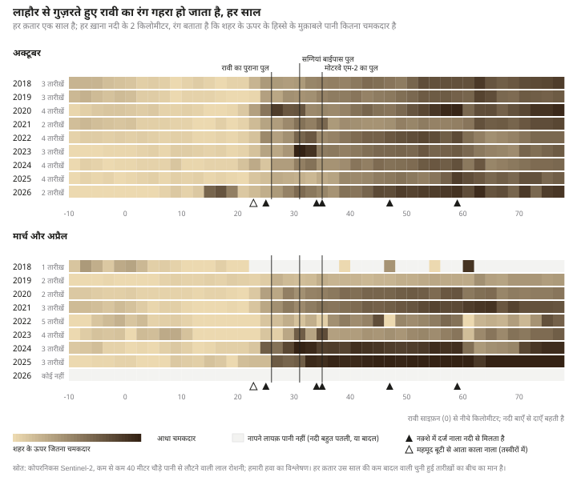
चार्ट की हर क़तार एक साल है और हर ख़ाना नदी के 2 किलोमीटर, और रंग बताता है कि शहर के ऊपर के हिस्से के मुक़ाबले पानी कितना चमकदार था। दूरियाँ रावी साइफ़न से बहाव की दिशा में गिनी गई हैं, जहाँ लाहौर के उत्तर-पूर्व में एक नहर नदी के नीचे से गुज़रती है। अक्टूबर की हर क़तार की शक्ल एक जैसी है: शहर के किनारे तक हल्की, फिर गहरी। वसंत की क़तारों में भी यही दिखता है, बस जहाँ नदी सिकुड़कर इतनी पतली रह गई थी कि नापी न जा सके वहाँ ख़ाने ख़ाली हैं।
एक ही आंकड़ा निकालने के लिए हमने हर तारीख़ पर दो हिस्सों की तुलना की: साइफ़न से नीचे के पहले 21 किलोमीटर, जो शहर के ऊपर हैं, और 30 से 49 किलोमीटर तक का हिस्सा, जो शहर के दक्षिण-पश्चिम से गुज़रकर आगे जाता है। दोनों की नाप 49 तारीख़ों पर हो सकी, अक्टूबर की 29 और वसंत की 20 पर, और उनमें से 47 पर नीचे के हिस्से का रंग ज़्यादा गहरा था। अक्टूबर की एक आम तारीख़ पर यह 26% ज़्यादा गहरा था और वसंत की एक आम तारीख़ पर 30%। सिर्फ़ दो तारीख़ें इससे अलग रहीं, 3 अक्टूबर 2024 और 13 अक्टूबर 2025, जब दोनों हिस्से लगभग एक जैसे थे, 1% के अंदर। सबसे बड़ा फ़र्क़ 64% था, 13 मार्च 2022 को। ये आंकड़े पानी के रंग के बारे में हैं, इस बारे में नहीं कि पानी में क्या है।
गिरावट शहर के उत्तरी सिरे के पास से शुरू होती है
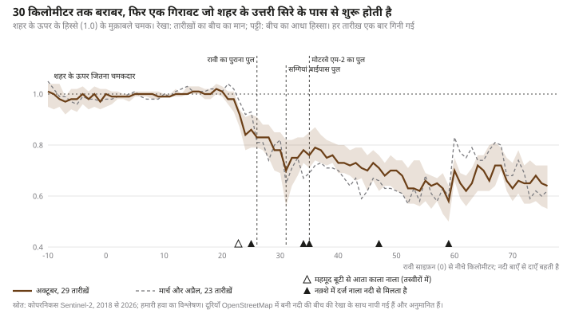
अक्टूबर की सब तारीख़ों को मिलाकर, हर तारीख़ को एक बार गिनकर, इस चार्ट की रेखा बनती है। शहर के ऊपर क़रीब 31 किलोमीटर तक चमक नहीं बदलती: बीच का मान ऊपर के स्तर के 0.97 और 1.02 के बीच रहता है। हम गिरावट की शुरुआत उस पहले किलोमीटर से मानते हैं जिसके बाद अक्टूबर का बीच का मान लगातार 5 किलोमीटर तक ऊपर के स्तर से कम से कम 5% नीचे रहे। यह जगह साइफ़न से क़रीब 23 किलोमीटर नीचे है, रावी के पुराने पुल से कोई 3 किलोमीटर ऊपर। 24 किलोमीटर तक पानी आम तौर पर 16% ज़्यादा गहरा हो चुका होता है, 30 किलोमीटर तक 22%, 44 किलोमीटर तक 29% और 54 किलोमीटर तक 38%।
उस जगह क्या है? सैटेलाइट तस्वीरों में एक पतला काला नाला पूरब से, महमूद बूटी की तरफ़ से, आता है और साइफ़न से क़रीब 23 किलोमीटर नीचे नदी से मिलता है, यानी लगभग उसी किलोमीटर पर जहाँ से अक्टूबर की रेखा गिरना शुरू होती है। नीचे की तस्वीर, जो 13 मार्च 2022 को ली गई, सफ़ेद घेरे के अंदर यह मिलन दिखाती है। वहाँ से काला पानी कुछ दूर तक शहर वाले किनारे के साथ-साथ चलता है और फिर नदी में घुल जाता है। मिलन की जगह हमने 10 मीटर पिक्सेल वाली तस्वीरों से पढ़ी है, जिसमें लगभग 100 मीटर इधर-उधर का फ़र्क़ हो सकता है।
वह जगह जहाँ से नदी का रंग गहरा होना शुरू होता है, 13 मार्च 2022। सफ़ेद घेरा: महमूद बूटी की तरफ़ से आने वाला काला नाला नदी से मिलता है। सफ़ेद चौकोर: वह जगह जहाँ एक छपे हुए अध्ययन ने महमूद बूटी ड्रेन के नमूने लिए। हमारे रिकॉर्ड में सबसे बड़ा फ़र्क़, 64%, इसी तारीख़ का है, इसलिए यह कोई आम दिन नहीं। कोपरनिकस Sentinel-2, असली रंग
OpenStreetMap इस रेखा पर एक नाला दिखाता है मगर उसे नदी से क़रीब 1 किलोमीटर पहले ख़त्म कर देता है, इसलिए हमारे नक़्शे में यहाँ किसी नाले का मुहाना नहीं है। नक़्शे पर पहला मुहाना 25 किलोमीटर पर है, और बाक़ी 34, 35, 47 और 59 किलोमीटर पर। चार्टों पर ये काले त्रिकोण हैं; सफ़ेद त्रिकोण महमूद बूटी की तरफ़ से आने वाला काला नाला है। नक़्शा न इनके नाम बताता है न यह कि इनमें क्या बहता है।
हमारे हिसाब से यह नाला बहुत संभव है कि महमूद बूटी ड्रेन ही है, क्योंकि उस ड्रेन पर छपे एक अध्ययन में नमूने लेने की जो जगह दी गई है वह तस्वीर में दिखने वाले इसी नाले पर पड़ती है। पाकिस्तान इंजीनियरिंग कांग्रेस के जर्नल में 2025 में छपे इस अध्ययन में 1 जून 2020 से 5 जून 2020 तक महमूद बूटी ड्रेन की 2 जगहों से दिन में दो बार नमूने लिए गए। इनमें से एक जगह, जो तस्वीर में सफ़ेद चौकोर है, उस जगह से क़रीब 0.8 किलोमीटर दूर है जहाँ नाला नदी से मिलता है। पानी में घुली हुई ऑक्सीजन लगभग नहीं के बराबर थी, कहीं-कहीं सिर्फ़ 0.29 मिलीग्राम प्रति लीटर। बायोकेमिकल ऑक्सीजन डिमांड, जो जैविक कचरे का पैमाना है, 146 से 432 मिलीग्राम प्रति लीटर थी, और पानी में तैरते ठोस कण 473 से 2,675 मिलीग्राम प्रति लीटर। लेखक इलाक़े को “घना औद्योगिक” बताते हैं और इन मात्राओं को राष्ट्रीय मानकों से कहीं ज़्यादा। उन्होंने धातुएँ नहीं नापीं।
इस तरह चमक में गिरावट लगभग उसी जगह से शुरू होती है जहाँ यह नाला नदी तक पहुँचता है। यह जगह का मेल है। इससे यह साबित नहीं होता कि गिरावट की वजह यही ड्रेन है। नीचे दी गई छपी हुई तालिका के आठ नालों में महमूद बूटी ड्रेन सबसे छोटी है, उनके छपे हुए बहाव का क़रीब 1%, और गिरावट आगे के बड़े नालों से गुज़रते हुए बढ़ती जाती है। तस्वीरें बताती हैं कि बदलाव कहाँ से शुरू होता है। वे यह नहीं बता सकतीं कि हर नाला कितना जोड़ता है।
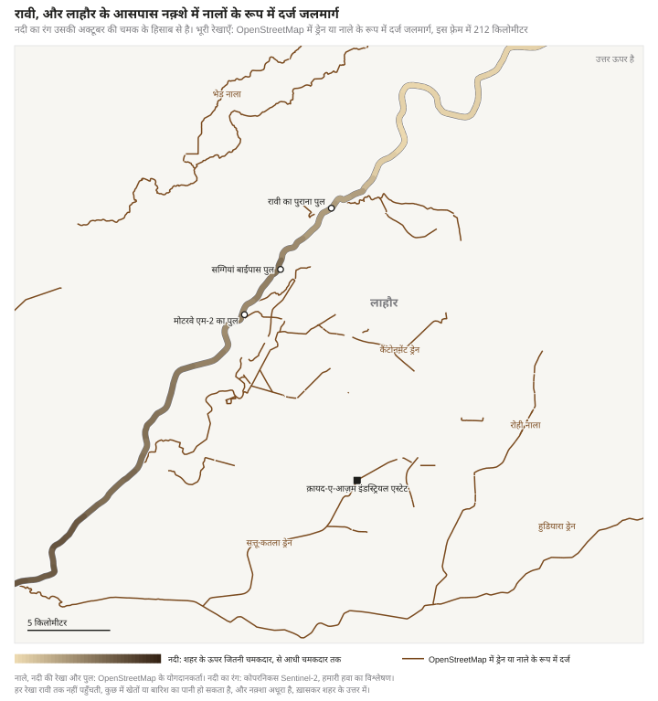
भूरी रेखाएँ वे सभी जलमार्ग हैं जिन्हें OpenStreetMap इस इलाक़े में ड्रेन या नाला दर्ज करता है; फ़्रेम के अंदर इनकी लंबाई क़रीब 212 किलोमीटर है। ये सब रावी तक नहीं पहुँचते, शहर के बाहर वाले कुछ में खेतों या बारिश का पानी हो सकता है, और नक़्शा अधूरा है, ख़ासकर शहर के उत्तर में।
पंजाब सरकार के इरिगेशन रिसर्च इंस्टीट्यूट के एक अध्ययन में लाहौर में रावी में गिरने वाले आठ नाले दर्ज हैं। हमें इनके मुहानों की नापी हुई जगहें नहीं मिलीं, इसलिए ये यहाँ क्रम से दर्ज हैं और हमारे चार्टों पर नहीं दिखाए गए।
लाहौर में रावी में गिरने वाले नाले और उनका बहाव, इरिगेशन रिसर्च इंस्टीट्यूट के छापे हुए आंकड़ों के मुताबिक़; ऊपर वाला पहले। अध्ययन में बहाव के आंकड़ों की कोई तारीख़ नहीं दी गई
नाला
क्यूसेक
घन मीटर प्रति सेकंड
आठों में हिस्सा
महमूद बूटी
21
0.6
1%
शाद बाग़
139
3.9
8%
फ़र्रुख़ाबाद
219
6.2
13%
बुड्ढा रावी
42
1.2
3%
मेन आउटफ़ॉल
193
5.5
12%
गुलशन-ए-रावी
247
7.0
15%
बाबू साबू
271
7.7
16%
हुडियारा
536
15.2
32%
आठों का जोड़, आंकड़े गोल करने से पहले, क़रीब 1,667 क्यूसेक बनता है (तालिका की गोल की हुई क़तारों का जोड़ 1,668 है), यानी 47 घन मीटर प्रति सेकंड। इसी अध्ययन में एक और जगह लिखा है कि शहर की निकासी 3,304 क्यूसेक को “पार” कर चुकी है, और दूसरे स्रोत दूसरे जोड़ देते हैं, इसलिए हम निकासी की मात्रा को अनिश्चित मानते हैं।
नालों में क्या बहता है: सीवेज और कारख़ानों का कचरा
नालों में सिर्फ़ सीवेज नहीं बहता। क़ायद-ए-आज़म इंडस्ट्रियल एस्टेट के कुछ चुने हुए उद्योगों पर 2016 के एक अध्ययन में बताया गया कि वहाँ क़रीब 475 उद्योग हैं, जिनका अनुमानित 134,541 घन मीटर गंदा पानी रोज़ सत्तू कतला और हुडियारा ड्रेन के रास्ते रावी में जाता है, और उस वक़्त एस्टेट में सफ़ाई का कोई प्लांट नहीं था। महमूद बूटी के इलाक़े में, जहाँ से चमक में गिरावट शुरू होती है, OpenStreetMap ड्रेन के पास कारख़ानों की चिमनियाँ और नज़दीक ही एक स्टील मिल दिखाता है।
इसका नदी पर क्या असर होता है, यह शहर के ऊपर और नीचे नमूने लेकर नापा जा चुका है; यही तुलना हम अंतरिक्ष से करते हैं। जर्नल Environmental Monitoring and Assessment में 2013 के एक अध्ययन में रावी साइफ़न पर, शहर के ऊपर, और शहर पर तथा उससे नीचे तीन जगहों से पानी और नदी की तली की मिट्टी ली गई। कम बहाव के मौसम में सुंदर पर, शहर के नीचे, तली की मिट्टी में साइफ़न के मुक़ाबले क्रोमियम 461%, कैडमियम 917%, निकल 853% और सीसा 179% ज़्यादा था। लेखक इसकी वजह शहर की घरेलू और औद्योगिक निकासी बताते हैं। Environmental Sciences Europe में 2024 के एक अध्ययन ने रावी से लिए गए अपने 56% नमूनों को, और शहर के नालों से लिए गए 100% नमूनों को, धातुओं से बुरी तरह दूषित बताया।
सैटेलाइट धातुएँ नहीं देख सकता। जो चमक हम नापते हैं वह उन चीज़ों से बदल सकती है जो पानी में बड़ी मात्रा में तैरती या घुली हों, जैसे गाद और जैविक पदार्थ; हमने यह नहीं नापा कि यहाँ इनमें से कौन-सी चीज़ काम कर रही है। इसलिए यह रिकॉर्ड नालों के लाए हुए बोझ के उसी हिस्से पर नज़र रखता है जो दिखता है, और जो हिस्सा नहीं दिखता वह नमूनों वाले अध्ययनों के ज़िम्मे है। उद्योग पर उठाए गए क़दम कारगर हैं या नहीं, यह जाँचने के लिए दोनों चाहिए होंगे।
नौ बरसों के अक्टूबर में कोई साफ़ रुझान नहीं
अगर लाहौर के ऊपर और नीचे की नदी का फ़र्क़ घट या बढ़ रहा होता तो सालाना आंकड़े एक दिशा में खिसकते। अक्टूबर में, जहाँ तक यह रिकॉर्ड बता सकता है, ऐसा नहीं हुआ।
अक्टूबर में रावी का रंग लाहौर के नीचे, ऊपर के मुक़ाबले कितना गहरा था, साल-दर-साल। हर आंकड़ा उस साल की तारीख़ों का बीच का मान है
साल
जिन तारीख़ों की तुलना हुई
शहर के नीचे इतना ज़्यादा गहरा
2018
3
27%
2019
3
25%
2020
4
27%
2021
2
21%
2022
4
32%
2023
3
29%
2024
4
25%
2025
4
20%
2026
2
32%
सालाना आंकड़ा 20% और 32% के बीच रहता है। पहले तीन बरसों का औसत 26% था और आख़िरी तीन का 26%। इन नौ आंकड़ों से गुज़ारी गई सीधी रेखा सालाना 0.2 प्रतिशत अंक ऊपर जाती है, मगर नौ बिंदुओं के साथ 95% विश्वास अंतराल बहुत चौड़ा है: सालाना 1.2 अंक की गिरावट से लेकर 1.6 अंक की बढ़त तक। इसलिए हम यह कह सकते हैं कि कोई साफ़ रुझान नहीं है, यह नहीं कि कुछ नहीं बदला। और चूँकि यह रंग की नाप है, फ़र्क़ के बने रहने से यह साबित नहीं होता कि प्रदूषण का बोझ भी वही रहा।
यह बात सिर्फ़ अक्टूबर के लिए है। वसंत का रिकॉर्ड कम है और कहीं ज़्यादा ऊपर-नीचे होता है: 9 में से 7 बरसों का वसंत का आंकड़ा मौजूद है, और वह 9% से 52% तक जाता है, इसलिए हम उससे कोई रुझान नहीं निकालते। एक तारीख़ से दूसरी तारीख़ के फ़र्क़ की एक वजह ख़ुद नदी है। अक्टूबर की जिन एक-तिहाई तारीख़ों पर शहर के नीचे पानी सबसे चौड़ा था, 165 मीटर या ज़्यादा, उन पर वह आम तौर पर ऊपर के मुक़ाबले 19% ज़्यादा गहरा था; जिन एक-तिहाई पर सबसे पतला था, 120 मीटर या कम, उन पर 28%। यानी जिन तारीख़ों पर नदी चौड़ी थी उन पर रंग का फ़र्क़ कम था। यह इस बात से मेल खाता है कि ज़्यादा पानी में गहरा रंग हल्का पड़ जाता है, मगर जो चौड़ाई हम नापते हैं वह बहाव का बस मोटा-सा अंदाज़ा है और उससे कारण तय नहीं होता।
हम किस चीज़ पर नज़र रखेंगे
हम जिस पैमाने पर नज़र रखेंगे वह अक्टूबर का फ़र्क़ है: नदी शहर के नीचे, ऊपर के मुक़ाबले कितनी कम लाल रोशनी लौटाती है। इसका आधार आंकड़ा 26% है, और 9 बरसों में सालाना आंकड़ा 20% और 32% के बीच रहा है। प्लांट का पहला चरण उस गंदे पानी का क़रीब 14% से 16% साफ़ करेगा जो ख़बरों के मुताबिक़ नदी में जाता है, इस पर निर्भर कि कौन-सा जोड़ लिया जाए; इसलिए शुरू का बदलाव छोटा होने की संभावना है, और एक साल से फ़ैसला नहीं होगा।
हमने एक नियम पहले से तय कर लिया है। अगर अक्टूबर का सालाना आंकड़ा लगातार 2 साल इन नौ बरसों के दायरे से बाहर रहे, यानी 20% से कम या 32% से ज़्यादा, तो हम उसे रिपोर्ट करेंगे। यह सिर्फ़ रिपोर्ट करने की शर्त है, अपने आप में सुधार या बिगाड़ का सबूत नहीं: सालाना आंकड़ा दो से चार तारीख़ों पर टिका होता है और संयोग से भी हिल सकता है, और नदी के बहाव को भी हिसाब में लेना होगा। क्या बदला, यह कहने से पहले पानी के नमूने चाहिए होंगे। अगर प्लांट से नदी में पहुँचने वाला पानी बदलता है तो रेखा चार्ट की ढलान भी कम हो सकती है, सबसे पहले उन मुहानों के पास जिन्हें यह सँभालेगा; डॉन के मुताबिक़ पहला चरण कैंटोनमेंट ड्रेन, मुल्तान रोड और गुलशन-ए-रावी के पंपिंग स्टेशनों का सीवेज लेगा। सैटेलाइट की तस्वीरें मुफ़्त हैं, और जो नई तारीख़ इसी नियम पर खरी उतरेगी हम उसे इस रिकॉर्ड में जोड़ते जाएँगे।
दो चीज़ें इस जाँच को और मज़बूत बना सकती हैं। एक वह जगह है जहाँ से गिरावट शुरू होती है। बाबू साबू प्लांट के पहले चरण के लिए जिन पंपिंग स्टेशनों के नाम लिए गए हैं उनमें महमूद बूटी ड्रेन शामिल नहीं है। उसके लिए शाद बाग़ पर एक अलग ट्रीटमेंट प्लांट का पर्यावरण आकलन सितंबर 2021 में तैयार हुआ था; हम यह पता नहीं कर सके कि उसका क्या हुआ। अगर 23 किलोमीटर पर नदी का रंग गहरा होना रुक जाए तो यह इस ड्रेन को देखने की वजह होगी। दूसरी चीज़ साइफ़न के पास और हुडियारा ड्रेन पर सरकार के अपने स्टेशन हैं, जो हर घंटे पानी को सीधे नापते हैं। उनका डेटा छपा तो हम उसे इस रिकॉर्ड के साथ रखकर देखेंगे।
सैटेलाइट क्या नहीं बता सकता
यह रंग देखता है, प्रदूषण नहीं। गाद वाली नदी में काला सीवेज मिले तो पानी ऐसा ही गहरा दिखेगा, और किनारे से नमूने लेने वाले अध्ययन ने भी यही बदलाव आँख से देखा। मगर चमक जीवाणुओं, धातुओं या ऑक्सीजन की गिनती नहीं है। उनके लिए पानी के नमूने लेने पड़ते हैं।
पानी का रंग दूसरी वजहों से भी गहरा हो सकता है। ये संभावनाएँ हैं जिन्हें हमने नहीं नापा। जहाँ नदी धीमी पड़ती है वहाँ गाद बैठ सकती है। तली काली हो तो ज़्यादा गहराई वाला पानी ज़्यादा काला दिखता है, और शहर में नदी तटबंधों के बीच बहती है। नदी में मिलने वाला कोई भी साफ़ पानी गाद को हल्का कर देगा। अलबत्ता गाद का बैठना धीरे-धीरे होना चाहिए, और हमें 31 किलोमीटर तक कोई बदलाव नहीं दिखता, फिर एक गिरावट जो लगभग उसी जगह से शुरू होती है जहाँ एक काला नाला नदी में गिरता है।
यह सीवेज और कारख़ानों के कचरे में फ़र्क़ नहीं कर सकता, न एक नाले को दूसरे के मुक़ाबले तौल सकता है। गिरावट लगभग उसी जगह से शुरू होती है जहाँ वह नाला नदी तक पहुँचता है जिसे हम महमूद बूटी ड्रेन मानते हैं, और बाक़ी नालों से गुज़रते हुए जारी रहती है। हर नाला कितना जोड़ता है, और उसमें उद्योग का हिस्सा कितना है, यह सिर्फ़ मुहानों पर नमूने लेकर तय हो सकता है।
इसमें दो मौसमों की कम बादल वाली चुनी हुई तारीख़ें हैं। मानसून की, जब नदी में बाढ़ होती है, और सर्दियों की, जब धुंध उसे छिपा लेती है, कोई नाप नहीं है। हमने जो 57 तारीख़ें चुनीं उनमें से 2 की नाप नहीं हो सकी क्योंकि दो में से एक टाइल उस आर्काइव में नहीं थी जिससे हमने तस्वीरें पढ़ीं, और 6 और तारीख़ों पर दोनों में से एक हिस्से में तुलना के लिए काफ़ी चौड़ा पानी नहीं था।
दूरियाँ अनुमानित हैं। ये नदी की उस बीच की रेखा के साथ नापी गई हैं जो OpenStreetMap में बनी है, और यह रेखा कुछ जगह आज की धारा से लंबी है।
हमने ख़ुद नाप पर चार जाँचें कीं। पहली, तस्वीर की टाइलों का जोड़। नदी साइफ़न से 24 किलोमीटर नीचे सैटेलाइट तस्वीर की एक टाइल से दूसरी में दाख़िल होती है, लगभग ठीक वहीं जहाँ से गिरावट शुरू होती है, और टाइलों का आपस में न मिलना एक नक़ली फ़र्क़ पैदा कर सकता था। टाइलें क़रीब 10 किलोमीटर एक-दूसरे पर चढ़ी हुई हैं, इसलिए हमने 4 तारीख़ें उस हिस्से पर दूसरी टाइल से दोबारा नापीं। पहली तारीख़ पर गिरावट एक तरह से 22% और दूसरी तरह से 21% थी, दूसरी पर 29% और 29%, तीसरी पर 39% और 38%, और चौथी पर 28% और 22%। जाँची गई चारों तारीख़ों पर यह फ़र्क़ दोनों टाइलों से दिखता है, इसलिए टाइलों के बेमेल होने को इसकी वजह मानना मुश्किल है।
दूसरी, बग़ल के नाले। सामान्य नाप नदी की नक़्शे वाली बीच की रेखा से 700 मीटर के अंदर का पानी लेती है, जिसमें कोई बग़ल का नाला, तालाब या ड्रेन आ सकती है; गिरावट की शुरुआत के पास वाला काला बग़ल का नाला क़रीब 629 मीटर दूर है। जब सिर्फ़ बीच की रेखा से 300 मीटर के अंदर का पानी लेकर दोबारा नापा गया तो 49 में से 46 तारीख़ों पर नदी का रंग शहर के नीचे ज़्यादा गहरा था, अक्टूबर की एक आम तारीख़ पर 25% और वसंत में 30%, और गिरावट साइफ़न से 23 किलोमीटर नीचे से शुरू हुई। तीसरी, किनारे। चौड़ाई की जाँच सिर्फ़ पूरब–पश्चिम और उत्तर–दक्षिण की दिशाओं में देखती है, इसलिए जहाँ नदी तिरछी बहती है वहाँ किनारे के कुछ पिक्सेल बच निकलते हैं। सिर्फ़ वे पिक्सेल लेने पर जिनके हर तरफ़ 20 मीटर तक पानी हो, 47 में से 44 तारीख़ें निकलीं, अक्टूबर में 26% और वसंत में 36%, और गिरावट 23 किलोमीटर से शुरू हुई। चौथी, तस्वीर का चुनाव। 15 तारीख़ों पर आर्काइव में एक ही तस्वीर के दो संस्करण हैं, और हमारी पहली कोशिश में जो पहले आया वही ले लिया गया था। हमने तय किया कि कौन-सा संस्करण लिया जाए और हर तारीख़ दोबारा नापी; इस रिपोर्ट के आंकड़े वही हैं। एक तारीख़ बदली: 13 अक्टूबर 2025, जिसकी तुलना पहली कोशिश में नहीं हो सकी थी क्योंकि कटी हुई तस्वीर पढ़ी गई थी, और जो उन दो तारीख़ों में से निकली जिन पर कोई फ़र्क़ नहीं था। किसी और तारीख़ का गोल किया हुआ आंकड़ा नहीं बदला; सबसे बड़ा बदलाव 0.04 प्रतिशत अंक था।
तरीक़ा और स्रोत
Sentinel-2 का Level-2A सतही परावर्तन, टाइलें 43RDQ और 43SDR, माइक्रोसॉफ़्ट के Planetary Computer से पढ़ा गया। तारीख़ें Earth Search के कैटलॉग से एक तय नियम पर चुनी गईं: दोनों टाइलें मौजूद हों, बादल 3% से कम हो और टाइल का 5% से कम हिस्सा ग़ायब हो, 1 मार्च से 20 अप्रैल और 1 से 25 अक्टूबर के बीच। कोई पिक्सेल पानी तब गिना जाता है जब वह हरी रोशनी में शॉर्टवेव इन्फ़्रारेड से ज़्यादा चमकदार हो, निकट इन्फ़्रारेड में काला हो, उस पर बादल या बादल की छाया का निशान न हो, और वह नदी की बीच की रेखा से 700 मीटर के अंदर हो। पानी के हर पिक्सेल को बीच की रेखा के सबसे नज़दीकी बिंदु का नदी-किलोमीटर दिया जाता है, और सिर्फ़ वे पिक्सेल रखे जाते हैं जहाँ पानी पूरब से पश्चिम और उत्तर से दक्षिण दोनों तरफ़ कम से कम 40 मीटर चौड़ा हो, ताकि किनारे के मिले-जुले पिक्सेल कम से कम आएँ। नदी के हर 500 मीटर का आंकड़ा उन पिक्सेलों के लाल बैंड का बीच का मान है। “26% ज़्यादा गहरा” का मतलब है कि उसी तारीख़ पर नीचे वाले हिस्से का बीच का मान ऊपर वाले हिस्से से 26% कम था। चार्टों में हर तारीख़ एक बार गिनी गई है।
यूरोपीय अंतरिक्ष एजेंसी, कोपरनिकस Sentinel-2 Level-2A, 2018 से 2026, Microsoft Planetary Computer के ज़रिए। planetarycomputer.microsoft.com
OpenStreetMap के योगदानकर्ता। नदी की बीच की रेखा, ड्रेन या नाले के रूप में दर्ज जलमार्ग, और पुल, 21 नवंबर 2026 को डाउनलोड किए गए। www.openstreetmap.org
अफ़ाफ़ आयशा, सिंचाई एवं ऊर्जा विभाग, लाहौर। “Water quality assessment of river Ravi around Lahore city”, पाकिस्तान इंजीनियरिंग कांग्रेस, पर्चा 704, 2011। pecongress.org.pk
ग़ुलाम ज़ाकिर हसन, फ़ैज़ रज़ा हसन और सलीम अख़्तर, इरिगेशन रिसर्च इंस्टीट्यूट, पंजाब सरकार। “Environment threats to groundwater in Lahore area”, पाकिस्तान इंजीनियरिंग कांग्रेस। pecongress.org.pk
सज्जाद हैदर और अन्य। “Wastewater characterization of selected industries in Quaid-e-Azam Industrial Estate: treatment options and impact on groundwater quality”, Proceedings of the Pakistan Academy of Sciences B 53(2), 2016। www.paspk.org
हबीब-उर-रहमान, फ़ाख़र रज़ा और शाज़िया ग़फ़्फ़ार। “Physico-chemical and microbiological water quality assessment of Mehmood Booti drain in Lahore city”, पाकिस्तान इंजीनियरिंग कांग्रेस जर्नल, जनवरी से जून 2025। journal.pecongress.org.pk
हाफ़िज़ अब्दुल्लाह शाकिर, जावेद इक़बाल क़ाज़ी और अब्दुल शकूर चौधरी। “Monitoring the impact of urban effluents on mineral contents of water and sediments of four sites of the river Ravi, Lahore”, Environmental Monitoring and Assessment 185, 2013। link.springer.com। हमने इसका सार पढ़ा।
हाफ़िज़ा हिरा इक़बाल और अन्य। “Human health and ecology at risk: a case study of metal pollution in Lahore, Pakistan”, Environmental Sciences Europe 36, 2024। link.springer.com
मुनव्वर अहमद और अन्य, इंटरनेशनल वॉटरलॉगिंग एंड सैलिनिटी रिसर्च इंस्टीट्यूट। “Impact assessment of domestic and industrial effluent on ground water quality surrounding Lahore”, पाकिस्तान इंजीनियरिंग कांग्रेस, विश्व जल दिवस 2021, पर्चा 174। pecongress.org.pk
“Punjab envisages Water Quality Index”, एक्सप्रेस ट्रिब्यून, 24 अक्टूबर 2026। tribune.com.pk
“Water pollution monitoring lacks public transparency”, एक्सप्रेस ट्रिब्यून, 11 अक्टूबर 2026। tribune.com.pk
“River pollution: Lahore High Court asks for detail of industries polluting the Ravi”, एक्सप्रेस ट्रिब्यून, 18 मई 2012। tribune.com.pk
रावी अर्बन डेवलपमेंट अथॉरिटी। महमूद बूटी/शाद बाग़, लाहौर पर वेस्टवॉटर ट्रीटमेंट प्लांट: पर्यावरण प्रभाव आकलन, सितंबर 2021। epd.punjab.gov.pk
“Asian Infrastructure Investment Bank okays $235m for Lahore water project”, डॉन, 12 अक्टूबर 2025। www.dawn.com। बैंक के अपने पन्ने पर 160 मिलियन डॉलर दर्ज है, और हमने वही लिया है।
“Rs50bn project to treat wastewater before disposal into Ravi”, डॉन, 16 अगस्त 2025। www.dawn.com
एशियन इन्फ़्रास्ट्रक्चर इन्वेस्टमेंट बैंक। Pakistan: Lahore Wastewater and Drainage Management Project, 9 अक्टूबर 2025 को मंज़ूर। www.aiib.org
वासा लाहौर। लारेच कॉलोनी से गुलशन-ए-रावी तक सीवेज व्यवस्था का ताज़ा पर्यावरण एवं सामाजिक प्रभाव आकलन, एशियन इन्फ़्रास्ट्रक्चर इन्वेस्टमेंट बैंक ने छापा, 2025। www.aiib.org
हर चार्ट और तालिका के पीछे की कच्ची फ़ाइलें और उन्हें बनाने वाली स्क्रिप्ट वेबसाइट की रिपॉज़िटरी में scripts/reports/ravi-drains/analysis/ के तहत मौजूद हैं।